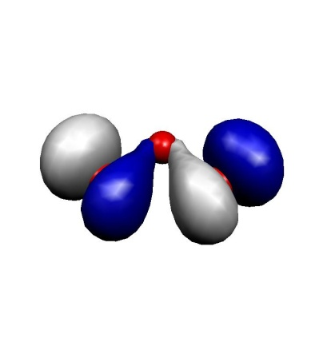
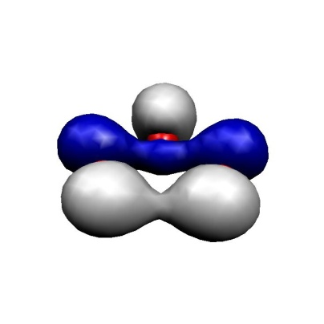
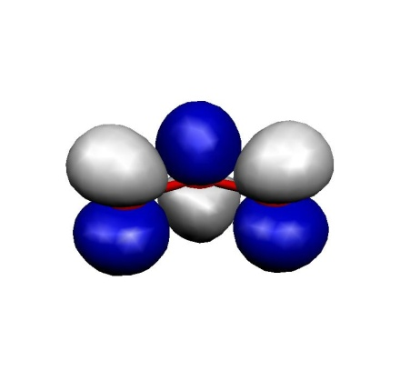
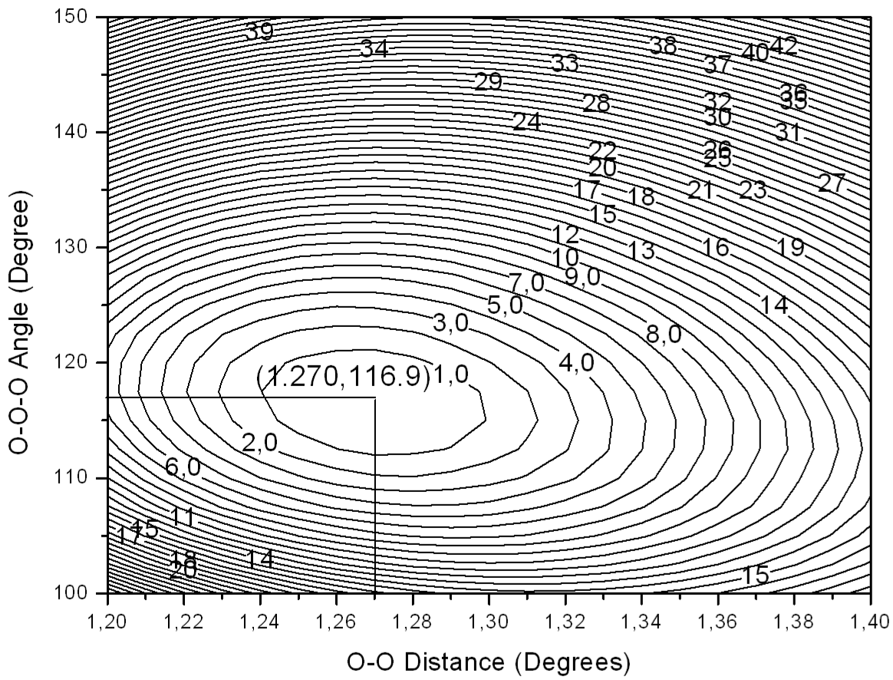

Multireference Configuration Interaction and Pertubation Theory (uncontracted)¶
The multireference correlation module (orca_mrci) is designed for
traditional (uncontracted) approaches (configuration interaction, MR-CI,
and perturbation theory, MR-PT), which is the main focus of this section.
For clarification, these approaches have in common that they consider excitations from each and every
configuration state function (CSF) of the reference wavefunction. Hence, the
computational cost of such approaches grows rapidly with the size of
the reference space (e.g. CAS-CI). Furthermore, all integrals must be kept in memory to be efficient, which further
limits the field of application.
Internally contracted multireference approaches, such as N-electron Valence State Perturbation Theory (NEVPT2), do not share these bottlenecks. Here, excitations are defined with respect to the entire reference wavefunction. A number of internally contracted approaches (NEVPT2, NEVPT4(SD), FIC-MRCC and FIC-MRCI) are available and described elsewhere in the manual.
Note
NEVPT2 is typically the method of choice as it is
fast and easy to use. It is highly recommended to check the respective
section, when new to the field. The following chapter focuses on the
traditional multi-reference approaches as part of the orca_mrci
module.
Introductory Remarks¶
All of the approaches in orca_mrciare uncontracted and start with
a reference wavefunction that consists of multiple
configurations (orbital occupation patterns). While the molecular orbitals typically arise from a CASSCF calculation, the reference wavefunction is not restricted to a complete active space (CAS).
Restrictive active spaces (RAS) or arbitrary list of configurations can be defined in the refssub-block.
The total wavefunction is constructed by considering single and double
excitations out of the reference configurations. These excited
configurations are then used to generate configuration state functions
(CSF) that have the proper spin and spatial symmetry. The number of
wavefunction parameters rapidly grows with the number of reference
functions. The orca_mrci module features a set of truncation criteria
(TSel, TPre, TNat) that help to reduce the number of wavefunction
parameters. Furthermore, by default, the program only considers
reference configurations that already have the target spin and spatial
symmetry. There are situations, where this is undesired and the
restrictions can be lifted with the keyword rejectinvalidrefs false.
For more information on the theory, the program module as well as its
usage we recommend the review article by Neese et
al.neese_advanced_2007. A tutorial type introduction to the subject
is presented in chapter modelchemistries.mrci of the manual and more examples in the
CASSCF tutorial.
Although there has been quite a bit of experience with it, this part of
the program is still somewhat hard to use and requires patience and
careful testing before the results should be accepted. While we try to
make your life as easy as possible, you have to be aware that ultimately
any meaningful multireference ab initio calculation requires more
insight and planning from the user side than standard SCF or DFT
calculation or single reference correlation approaches like MP2 -- so
don't be fainthearted! You should also be aware that with multireference
methods it is very easy to let a large computer run for a long time and
still to not produce a meaningful result -- your insight is a key
ingredient to a successful application! Below a few examples illustrate
some basic uses of the orca_mrci module.
RI-approximation¶
First of all, it is important to understand that the default mode of the
MR-CI module in its present implementation performs a full integral
transformation from the AO to the MO basis. This becomes very laborious
and extremely memory intensive beyond approximately 200 MOs that are
included in the CI. Alternatively, one can construct molecular
electron-electron repulsion integrals from the resolution of the
identity (RI) approximation. Thus a meaningful auxiliary basis set must
be provided if this option is chosen. We recommend the fitting bases
developed by the TurboMole developers for MP2 calculations. These give
accurate transition energies; however, the error in the total energies
is somewhat higher and may be on the order of 1 mEh or so. Check
IntMode to change the default mode for the integral transformation.
Note that in either way, the individually selecting MRCI module requires
to have all integrals in memory which sets a limit on the size of the
molecule that can be studied.
Individual Selection¶
Secondly, it is important to understand that the MR-CI module is of the individually selecting type. Thus, only those excited configuration state functions (CSFs) which interact more strongly than a given threshold (T\(_{sel })\) with the 0\(^{\text{th} }\) order approximations to the target states will be included in the variational procedure. The effect of the rejected CSFs is estimated using second order perturbation theory. The 0\(^{\text{th} }\) order approximations to the target states are obtained from the diagonalization of the reference space configurations. A further approximation is to reduce the size of this reference space through another selection -- all initial references which contribute less than a second threshold (T\(_{pre })\) to the 0\(^{\text{th} }\) order states are rejected from the reference space.
Single excitations¶
One important aspect concerns the single excitations. If the reference
orbitals come from a CASSCF calculation the matrix elements between the
reference state and the single excitations vanishes and the singles will
not be selected. However, they contribute to fourth and higher orders in
perturbation theory and may be important for obtaining smooth potential
energy surfaces and accurate molecular properties. Hence, the default
mode of the MRCI module requires to include all of the single
excitations via the flag AllSingles =true. This may lead to lengthy
computations if the reference spaces becomes large!
Reference Spaces¶
Third, the reference spaces in the MR-CI module can be of the complete
active space (CAS(n-electrons,m-orbitals) ) or restricted active
space (RAS, explained later) type. It is important to understand
that the program uses the orbitals around the HOMO-LUMO gap as provided
by the user to build up the reference space! Thus, if the orbitals that
you want to put in the active space are not coming "naturally" from your
SCF calculation in the right place you have to reorder them using the
"moread" and "rotate" features together with the NoIter directive.
To select the most meaningful and economic reference space is the most
important step in a multireference calculation. It always requires
insight from the user side and also care and, perhaps, a little trial
and error.
Size Consistency¶
Fourth, it is important to understand that CI type methods are not size consistent. Practically speaking the energy of the supermolecule A-B with noninteracting A and B fragments is not equal to the energies of isolated A and isolated B. There are approximate ways to account for this (ACPF, AQCC and CEPA methods) but the effect will be present in the energies, the more so the more electrons are included in the treatment. The same is not true for the perturbation theory based methods which are size consistent as long as the reference wavefunction is.
Performance¶
There are many flags that control the performance of the MR-CI program. Please refer to chapter 0 for a description of possible flags, thresholds and cut-offs. The most important thresholds are T\(_{\text{sel} }\) and T\(_{\text{pre} }\), and for SORCI alsoT\(_{\text{nat} }\).
Zwitter-ionic form of Serine.*
For some methods, like ACPF, it is possible to compare the performance of the MRCI module with the performance of the MDCI module. The MDCI module has been written to provide optimum performance if no approximations are introduced. The MRCI module has ben written more with the idea of flexibility rather than the idea of performance. Let us compare the performance of the two programs in a slightly nontrivial calculation -- the zwitter-ionic form of serine. We compare the selecting MRCI approach with the approximation free MDCI module. The molecular size is such that still all four index integrals can be stored in memory.
Comparison of the performance of the MRCI and MDCI modules for a single reference calculation with the bn-ANO-DZP basis set on the zwitter-ionic form of serine (14 atoms, 133 basis functions).
| [Module ]{style="color: white"} | [Method ]{style="color: white"} | [T\(_{sel }\)(Eh) ]{style="color: white"} | [Time (sec) ]{style="color: white"} | [Energy (Eh) ]{style="color: white"} |
|---|---|---|---|---|
| MRCI | ACPF | 10\(^{-6}\) | 3277 | -397.943250 |
| MDCI | ACPF | 0 | 1530 | -397.946429 |
| MDCI | CCSD | 0 | 2995 | -397.934824 |
| MDCI | CCSD(T) | 0 | 5146 | -397.974239 |
The selecting ACPF calculation selects about 15% of the possible double excitations and solves a secular problem of size\(\approx\) 360,000 CSFs. The MDCI module ACPF calculation optimizes approximately 2.5 million wavefunction amplitudes --- and this is not a large molecule or a large basis set! Despite the fact that the MDCI module makes no approximation, it runs twice as fast as the selected MRCI module and an estimated 50 times faster than the unselected MRCI module! This will become even more pronounced for the larger and more accurate basis sets that one should use in such calculations anyways. The error of the selection is on the order of 3 mEh or 2 kcal/mol in the total energy. One can hope that at least part of this error cancels upon taking energy differences.1 The more rigorous CCSD calculation takes about a factor of two longer than the ACPF calculation which seems reasonable. The triples add another factor of roughly 2 in this example but this will increase for larger calculations since it has a steeper scaling with the system size. The ACPF energy is intermediate between CCSD and CCSD(T) which is typical --- ACPF overshoots the effects of disconnected quadruples which partially compensates for the neglect of triples.
These timings will strongly depend on the system that you run the calculation on. Nevertheless, what you should take from this example are the message that if you can use the MDCI module, do it.
The MDCI module can avoid a full integral transformation for larger systems while the MRCI module can use selection and the RI approximation for larger systems. Both types of calculation will become very expensive very quickly! Approximate MDCI calculations are under development.
Symmetry¶
The MRCI program really takes advantage of symmetry adapted orbitals. In this case the MRCI matrix can be blocked according to irreducible representations and be diagonalized irrep by irrep. This is a big computational advantage and allows one to converge on specific excited states much more readily than if symmetry is not taken into account.
The syntax is relatively easy. If you specify:
Then the "*" indicates that this is to be repeated in each irrep of the point group. Thus, in C\(_{2v}\) the program would calculate 8 singletroots in each of the four irreps of the C\(_{2v}\) point group thus leading to a total of 32 states.
Alternatively, you can calculate just a few roots in the desired irreps:
newblock 1 0
nroots 3
refs cas(4,4) end
end
newblock 1 2
nroots 5
refs cas(4,4) end
end
newblock 3 1
nroots 1
refs cas(4,4) end
end
In this example, we would calculate 3 singlet roots in the irrep "0" (which is A\(_{1})\), then five roots in irrep "2" (which is B\(_{1})\) andthen 1 triplet root in irrep 1 (which is B\(_{2})\).
Obviously, the results with and without symmetry will differ slightly. This is due to the fact that without symmetry the reference space will contain references that belong to "wrong" symmetry but will carry with them excited configurations of "right" symmetry. Hence, the calculation without use of symmetry will have more selected CSFs and hence a slightly lower energy. This appears to be unavoidable. However, the effects should not be very large for well designed reference spaces since the additional CSFs do not belong to the first order interacing space.
A Tutorial Type Example of a MR Calculation¶
Perhaps, the most important use of the MR-CI module is for the calculation of transition energies and optical spectra. Let us first calculate the first excited singlet and triplet state of the formaldehyde molecule using the MR-CI method together with the Davidson correction to approximately account for the effect of unlinked quadruple substitutions. We deliberately choose a somewhat small basis set for this calculation which is already reasonable since we only look at a valence excited state and want to demonstrate the principle.
Suppose that we already know from a ground state calculation that the HOMO of H\(_{2}\)CO is an oxygen lone pair orbitals and the LUMO the \(\pi^{\ast}\) MO. Thus, we want to calculate the singlet and triplet n\(\to \pi^{\ast }\) transitions and nothing else. Consequently, we only need to correlate two electrons in two orbitals suggesting a CAS(2,2) reference space.
This input -- which is much more than what is really required - needs
some explanations: First of all, we choose a standard RHF calculation
with the SVP basis set and we assign the SV/C fitting basis although it
is not used in the SCF procedure at all. In the %mrci block all
details of the MR-CI procedure are specified. First, EWin
(%method frozencore fc_ewin) selects the MOs within the given orbital
energy range to be included in the correlation treatment. The CIType
variable selects the type of multireference treatment. Numerous choices
are possible and MRCI is just the one selected for this application.
Note
The CIType statement selects several default values for other variables. So it is a very good idea to place this statement at the beginning of the MR-CI block and possibly overwrite the program selected defaults later. If you place the CIType statement after one of the values which it selects by default your input will simply be overwritten!
The variables EUnselOpt and DavidsonOpt control the corrections to
the MR-CI energies. EUnselOpt specifies the way in which the MR-CI
energies are extrapolated to zero threshold T\(_{\text{Sel} }\). Here we
choose a full MR-MP2 calculation of the missing contributions to be done
after the variational step, i.e. using the relaxed part of the
reference wavefunction as a 0\(^{\text{th} }\) order state for MR-PT. The
DavidsonOpt controls the type of estimate made for the effect of
higher substitutions. Again, multiple choices are possible but the most
commonly used one (despite some real shortcomings) is certainly the
choice Davidson1. The flag UseIVOs instructs the program to use
"improved virtual orbitals". These are virtual orbitals obtained from a
diagonalization of the Fock operator from which one electron has been
removed in an averaged way from the valence orbitals. Thus, these
orbitals "see" only a\(N-1\) electron potential (as required) and are not
as diffuse as the standard virtual orbitals from Hartree-Fock
calculations. If you input DFT orbitals in the MR-CI moldule (which is
perfectly admittable and also recommended in some cases, for example for
transition metal complexes) then it is recommended to turn that flag off
since the DFT orbitals are already o.k. in this respect. The two
thresholds Tsel and Tpre are already explained above and represent
the selection criteria for the first order interacting space and the
reference space respectively. Tsel is given in units of Eh and refers
to the second order MR-MP2 energy contribution from a given excited CSF.
10\(^{-6}\) Eh is a pretty good value. Reliable results for transitionenergies start with\(\approx 10^{-5}\); however, the total energy is
converging pretty slowly with this parameter and this is one of the
greatest drawbacks of individually selecting CI procedures! (see below).
Tpre is dimensionless and refers to the weight of a given initial
reference after diagonalization of the given initial reference space
(10\(^{-4\, }\)is a pretty good value and there is little need to go much
lower. Aggressive values such as 10\(^{-2}\) only select the truly leading
configurations for a given target state which can be time saving.
Intermediate values are not really recommended). The parameters
MaxMemInt and MaxMemVec tell the program how much memory (in MB) it
is allowed to allocate for integrals and for trial and sigma-vectors
respectively.
The flag IntMode tells the program to perform a full integral
transformation. This is possible for small cases with less than, say,
100--200 MOs. In this case that it is possible it speeds up the
calculations considerably. For larger molecules you have to set this
flag to RITrafo which means that integrals are recomputed on the fly
using the RI approximation which is more expensive but the only way to
do the calculation. To switch between the possible modes use:
For small molecules or if high accuracy in the total energies is required it is much better to use the exact four index transformation. The limitations are that you will run out of disk space or main memory with more than ca. 200--300 MOs.
The variable Solver can be diag (for Davidson type diagonalization)
or DIIS for multirrot DIIS type treatments.
For CI methods, the diag solver is usually preferable. For methods like ACPF that contain nonlinear terms, DIIS is imperative.
Next in the input comes the definition of what CI matrices are to be constructed and diagonalized. Each multiplicity defines a block of the CI matrix which is separately specified. Here we ask for two blocks -- singlet and triplet. The general syntax is:
NewBlock Multiplicity Irrep
NRoots 1 # Number of roots to determine
Excitations cisd # Type of excitations
Refs CAS(NEl,NOrb) end # Reference space def.
end # Finalize the block
Now that all input is understood let us look at the outcome of this calculation:
The first thing that happens after the SCF calculation is the
preparation of the frozen core Fock matrix and the improved virtual
orbitals by the program orca_ciprep. From the output the energies of
the IVOs can be seen. In this case the LUMO comes down to --8.2 eV which
is much more reasonable than the SCF value of\(+\)3....
eV. Concomitantly, the shape of this MO will be much more realistic and
this important since this orbital is in the reference space!
------------------------------------------------------------------------------
ORCA CI-PREPARATION
------------------------------------------------------------------------------
Reading the GBW file ... done
Symmetry usage ... ON
One-Electron Matrix ... test1.H.tmp
GBW-File ... test1.gbw
Improved virtual orbitals ... test1.ivo
First MO in the CI ... 2
Internal Fock matrix ... test1.fi.tmp
LastInternal Orbital ... 6
Integral package used ... LIBINT
Reading the GBW file ... done
Symmetry usage ... ON
Reading the one-electron matrix ... done
Forming inactive density ... done
Forming averaged valence density ...
Scaling the occupied orbital occupation numbers
First MO ... 2
Last MO ... 7
Number of electrons in the range ... 12
Scaling factor ... 0.917
done
Forming internal density ... done
Forming Fock matrix/matrices ...
Nuclear repulsion ... 31.371502
Core repulsion ... 31.371502
One-electron energy ... -114.942080
Fock-energy ... -94.993431
Final value ... -73.596254
done
Modifying virtual orbitals ...
Last occupied MO ... 7
Total number of MOs ... 38
Number of virtual MOs ... 30
Doing diagonalization with symmetry
The improved virtual eigenvalues:
0: -0.2955 au -8.041 eV 2- B2
1: -0.0701 au -1.907 eV 6- A1
2: -0.0176 au -0.479 eV 3- B1
3: 0.0064 au 0.175 eV 7- A1
4: 0.2922 au 7.951 eV 8- A1
5: 0.2948 au 8.021 eV 3- B2
6: 0.3836 au 10.439 eV 4- B1
7: 0.4333 au 11.790 eV 9- A1
8: 0.4825 au 13.128 eV 5- B1
9: 0.5027 au 13.680 eV 10- A1
10: 0.7218 au 19.642 eV 11- A1
11: 0.8351 au 22.723 eV 4- B2
12: 0.9371 au 25.501 eV 6- B1
13: 1.0265 au 27.933 eV 1- A2
14: 1.1141 au 30.317 eV 12- A1
15: 1.2869 au 35.017 eV 5- B2
16: 1.4605 au 39.743 eV 7- B1
...
done
Transforming integrals ... done
Storing passive energy ... done ( -73.59625384 Eh)
Transforming internal FI ... done
.... done with the Frozen Core Fock matrices
The next step is to transform the electron-electron repulsion integrals into the MO basis:
-------------------------
SHARK HALF TRANSFORMATION
-------------------------
Number of basis functions ... 38
Number of operators ... 1
Operator 0: 2- 37
Integral generator used ... SHARK
Contraction scheme used ... SEGMENTED CONTRACTION
MaxCore in resort ... 256 MB
Half transformed integrals for op= 0 ... test1.SHARK_MNPQ0.tmp
Resorted half transformed integrals ... test1.JAO.tmp
Starting integral generation + half trafo...
Half trafo (segmented) done. Total time =0.1 sec integrals=0.0 sec trafo=0.0 sec
Starting integral resorting ... done ( 0.0 sec)
SHARK half integral transformation done. Total time = 0.1 sec.
-------------------
FULL TRANSFORMATION
-------------------
Processing MO 10
Processing MO 20
Processing MO 30
Full transformation done
Number of integrals made ... 222111
Number of integrals stored ... 59070
Timings:
Time for first half transformation ... 0.068 sec
Time for second half transformation ... 0.014 sec
Total time ... 0.086 sec
This will result in a few additional disk files required by orca_mrci.
The program then tells you which multiplicities will be treated in this
MRCI run:
------------------
CI-BLOCK STRUCTURE
------------------
Number of CI-blocks ... 3
===========
CI BLOCK 1
===========
Multiplicity ... 1
Irrep ... 0
Number of reference defs ... 1
Reference 1: CAS(2,2)
Excitation type ... CISD
Excitation flags for singles:
1 1 1 1
Excitation flags for doubles:
1 1 1 / 1 1 1 / 1 1 1
===========
CI BLOCK 2
===========
Multiplicity ... 1
Irrep ... 1
Number of reference defs ... 1
Reference 1: CAS(2,2)
Excitation type ... CISD
Excitation flags for singles:
1 1 1 1
Excitation flags for doubles:
1 1 1 / 1 1 1 / 1 1 1
===========
CI BLOCK 3
===========
Multiplicity ... 3
Irrep ... 1
Number of reference defs ... 1
Reference 1: CAS(2,2)
Excitation type ... CISD
Excitation flags for singles:
1 1 1 1
Excitation flags for doubles:
1 1 1 / 1 1 1 / 1 1 1
--------------------------------------------------------------------
-------------------- ALL SETUP TASKS ACCOMPLISHED ------------------
-------------------- ( 0.139 sec) ------------------
--------------------------------------------------------------------
Now that all the setup tasks have been accomplished the MRCI calculation itself begins.
###################################################
# #
# M R C I #
# #
# TSel = 1.000e-06 Eh #
# TPre = 1.000e-02 #
# TIntCut = 1.000e-10 Eh #
# Extrapolation to unselected MR-CI by full MP2 #
# DAVIDSON-1 Correction to full CI #
# #
###################################################
---------------------
INTEGRAL ORGANIZATION
---------------------
Reading the one-Electron matrix ... done
E0 read was -73.596253835266
Reading the internal Fock matrix
... assuming it to be equal to the one-electron matrix !!! done
Preparing the integral list ... done
Loading the full integral ... done
Making the simple integrals ... done
***************************************
* CI-BLOCK 1 *
***************************************
Configurations with insufficient # of SOMOs WILL be rejected
Building a CAS(2,2) for multiplicity 1 and irrep=A1
Reference Space:
Initial Number of Configurations : 2
Internal Orbitals : 2 - 6
Active Orbitals : 7 - 8
External Orbitals : 9 - 37
The number of CSFs in the reference is 2
Calling MRPT_Selection with N(ref)=2
In the first step, the reference space is diagonalized. From this CI,
the most important configurations are selected with Tpre:
------------------
REFERENCE SPACE CI
------------------
Pre-diagonalization threshold : 1.000e-02
Warning: Setting NGuessMat to 512
N(ref-CFG)=2 N(ref-CSF)=2
****Iteration 0****
Lowest Energy : -113.779221580786
Maximum Energy change : 113.779221580786 (vector 0)
Maximum residual norm : 0.000000000000
*** CONVERGENCE OF RESIDUAL NORM REACHED ***
Reference space selection using TPre= 1.00e-02
... found 1 reference configurations (1 CSFs)
... now redoing the reference space CI ...
Warning: Setting NGuessMat to 512
N(ref-CFG)=1 N(ref-CSF)=1
****Iteration 0****
Lowest Energy : -113.778810013503
Maximum Energy change : 113.778810013503 (vector 0)
Maximum residual norm : 0.000000000000
*** CONVERGENCE OF RESIDUAL NORM REACHED ***
In this case, the CAS space only has 2 correctly symmetry adapted CSFs one of which (the closed-shell determinant) is selected. In general, larger CAS spaces usually carry around a lot of unnecessary CSFs which are not needed for anything and then the selection is important to reduce the computational effort. The result of the second reference space CI is printed:
----------
CI-RESULTS
----------
The threshold for printing is 0.30 percent
The weights of configurations will be printed. The weights are summed over
all CSFs that belong to a given configuration before printing
STATE 0: Energy= -113.778810014 Eh RefWeight= 1.0000 0.00 eV 0.0 cm**-1
1.0000 : h---h---[20]
Energy is the total energy in Eh. In the present case we can compare
to the SCF energy -113.778810014 Eh and find that the reference space
CI energy is identical, as it has to be since the lowest state coincides
with the reference space. RefWeight gives the weight of the reference
configurations in a CI state. This is 1.0 in the present case since
there were only reference configurations. The number 1.000 is the
weight of the following configuration in the CI vector. The description
of the configuration h—h—[20]p—p— is understood as follows:2 The
occupation of the active orbitals is explicitly given in square
brackets. Since the HOMO orbitals is number 7 from the SCF procedure,
this refers to MOs 7 and 8 in the present example since we have two
active orbitals. The 2 means doubly occupied, the 0 means empty. Any
number (instead of —) appearing after an h gives the index of an
internal orbital in which a hole is located. Simarly, any number after a
p gives the index of an virtual (external) MO where a particle is
located. Thus h—h—[20] is a closed shell configuration and it
coincides with the SCF configuration---this was of course to be
expected. The second root (in CI-Block 2) h—h—[11] by comparison
refers to the configuration in which one electron has been promoted from
the HOMO to the LUMO and is therefore the desired state that we wanted
to calculate. Things are happy therefore and we can proceed to look at
the output.
The next step is the generation of excited configurations and their
selection based on Tsel:
------------------------------
MR-PT SELECTION TSel= 1.00e-06
------------------------------
Setting reference configurations WITH use of symmetry
Building active patterns WITH use of symmetry
Selection will be done from 1 spatial configurations
Selection will make use of spatial symmetry
( 0) Refs : Sel: 1CFGs/ 1CSFs Gen: 1CFGs/ 1CSFs (0.000 sec)
Building active space densities ... 0.002 sec
Building active space Fock operators ... 0.000 sec
( 1) (p,q)->(r,s): Sel: 1CFGs/ 1CSFs Gen: 1CFGs/ 1CSFs (0.000 sec)
( 2) (i,-)->(p,-): Sel: 1CFGs/ 1CSFs Gen: 1CFGs/ 1CSFs (0.000 sec)
( 3) (i,j)->(p,q): Sel: 8CFGs/ 8CSFs Gen: 8CFGs/ 8CSFs (0.000 sec)
( 4) (i,p)->(q,r): Sel: 0CFGs/ 0CSFs Gen: 1CFGs/ 1CSFs (0.000 sec)
( 5) (p,-)->(a,-): Sel: 8CFGs/ 8CSFs Gen: 8CFGs/ 8CSFs (0.000 sec)
( 6) (i,-)->(a,-): Sel: 52CFGs/ 52CSFs Gen: 52CFGs/ 52CSFs (0.000 sec)
( 7) (i,j)->(p,a): Sel: 95CFGs/ 166CSFs Gen: 96CFGs/ 167CSFs (0.000 sec)
( 8) (i,p)->(q,a): Sel: 21CFGs/ 42CSFs Gen: 22CFGs/ 44CSFs (0.000 sec)
( 9) (p,q)->(r,a): Sel: 3CFGs/ 3CSFs Gen: 5CFGs/ 5CSFs (0.000 sec)
(10) (i,p)->(a,b): Sel: 555CFGs/ 1082CSFs Gen: 584CFGs/ 1139CSFs (0.001 sec)
(11) (p,q)->(a,b): Sel: 124CFGs/ 124CSFs Gen: 148CFGs/ 148CSFs (0.000 sec)
(12) (i,j)->(a,b): Sel: 1688CFGs/ 2685CSFs Gen: 1887CFGs/ 2947CSFs (0.001 sec)
Selection results:
Total number of generated configurations: 2814
Number of selected configurations : 2557 ( 90.9%)
Total number of generated CSFs : 4522
Number of selected CSFS : 4173 ( 92.3%)
The selected tree structure:
Number of selected Internal Portions : 11
Number of selected Singly External Portions: 27
average number of VMOs/Portion : 6.39
percentage of selected singly externals : 22.83
Number of selected Doubly External Portions: 21
average number of VMOs/Portion : 107.59
percentage of selected doubly externals : 27.76
Here, the program loops through classes of excitations. For each
excitation it produces the excited configurations (CFGs) and from it the
linearly independent spin functions (CSFs) which are possible within the
configuration. It then calculates the interaction with the contracted
\(0^{th}\) order roots and includes all CSFs belonging to a given CFG in
the variational space if the largest second order perturbation energy is
larger or equal to Tsel. In the present case
\(\approx\)136,000 CSFs are produced of which 25% are
selected. For larger molecules and basis sets it is not uncommon to
produce\(10^{9}\)--\(10^{10}\) configurations and then there is no choice
but to select a much smaller fraction than 20%. For your enjoyment, the
program also prints the total energies of each state after selection:
Diagonal second order perturbation results:
State E(tot) E(0)+E(1) E2(sel) E2(unsel)
Eh Eh Eh Eh
----------------------------------------------------------------
0 -114.108350270 -113.778810014 -0.329433 -0.000107
You can ignore this output if you want. In cases that the perturbation
procedure is divergent (not that uncommon!) the total energies look
strange---don't worry---the following variational calculation is still
OK. The second order perturbation energy is here divided into a selected
part E2(sel) and the part procedure by the unselected configurations
E2(unsel). Depending on the mode of EUnselOpt this value may
already be used later as an estimate of the energetic contribution of
the unselected CSFs.3
Now we have\(\approx\) 4,200 CSFs in the variational space of CI block 1 and proceed to diagonalize the Hamiltonian over these CSFs using a Davidson or DIIS type procedure:
------------------------
DAVIDSON-DIAGONALIZATION
------------------------
Dimension of the eigenvalue problem ... 4173
Number of roots to be determined ... 1
Maximum size of the expansion space ... 4
Maximum number of iterations ... 35
Convergence tolerance for the residual ... 1.000e-06
Convergence tolerance for the energies ... 1.000e-06
Orthogonality tolerance ... 1.000e-14
Level Shift ... 0.000e+00
Constructing the preconditioner ... o.k.
Building the initial guess ... o.k.
Number of trial vectors determined ... 4
****Iteration 0****
Size of expansion space: 3
Lowest Energy : -113.937028067251
Maximum Energy change : 113.937028067251 (vector 0)
Maximum residual norm : 0.741727830968
****Iteration 1****
Size of expansion space: 4
Lowest Energy : -114.082265676116
Maximum Energy change : 0.145237608865 (vector 0)
Maximum residual norm : 0.012707561344
Rebuilding the expansion space
****Iteration 2****
Size of expansion space: 2
Lowest Energy : -114.085350429118
Maximum Energy change : 0.003084753001 (vector 0)
Maximum residual norm : 0.002880697397
****Iteration 3****
Size of expansion space: 3
Lowest Energy : -114.086043274125
Maximum Energy change : 0.000692845007 (vector 0)
Maximum residual norm : 0.000098595378
****Iteration 4****
Size of expansion space: 4
Lowest Energy : -114.086074300143
Maximum Energy change : 0.000031026018 (vector 0)
Maximum residual norm : 0.000004959126
Rebuilding the expansion space
****Iteration 5****
Size of expansion space: 2
Lowest Energy : -114.086076038587
Maximum Energy change : 0.000001738444 (vector 0)
Maximum residual norm : 0.000000572348
*** CONVERGENCE OF RESIDUAL NORM REACHED ***
Storing the converged CI vectors ... test1.mrci.vec
*** DAVIDSON DONE ***
Returned from DIAG section
The procedure converges on all roots simultaneously and finishes after
six iterations which is reasonable. Now the program calculates the
Davidson correction (DavidsonOpt) which is printed for each root.
Already in this small example the correction is pretty large, ca. 27 mEh for the ground state (and\(\approx 36\) mEh for the excited state, later in the output). Thus, a contribution of\(\approx 9\) mEh = 0.25 eV is obtained for the transition energy which is certainly significant. Unfortunately, the correction becomes unreliable as the reference space weight drops or the number of correlated electrons becomes large. Here 0.912 and 0.888 are still OK and the system is small enough to expect good results from the Davidson correction.
The next step is to estimate the correction for the unselected configurations:
Unselected CSF estimate:
Full relaxed MR-MP2 calculation ...
Selection will be done from 1 spatial configurations
Selection will make use of spatial symmetry
Selection will make use of spatial symmetry
Selection will make use of spatial symmetry
done
Selected MR-MP2 energies ...
Root= 0 E(unsel)= -0.000106931
In the present case this is below 1 mEh and also very similar for all three states such that it is not important for the transition energy.
----------
CI-RESULTS
----------
The threshold for printing is 0.30 percent
The weights of configurations will be printed. The weights are summed over
all CSFs that belong to a given configuration before printing
STATE 0: Energy= -114.113096211 Eh RefWeight= 0.9124 0.00 eV 0.0 cm**-1
0.9124 : h---h---[20]
0.0114 : h 6h 6[22]
The final ground state energy is -114.113096211 which is an estimate
of the full CI energy in this basis set. The leading configuration is
still the closed-shell configuration with a weight of\(\approx\) 91%.
However, a double excitation outside the reference space contributes
some 1%. This is the excitation MO6,MO6\(\to\)LUMO,LUMO. This indicates
that more accurate results are expected once MO6 is also included in the
reference space (this is the HOMO-1). The excited state is dominated by
the HOMO-LUMO transition (as desired) but a few other single- and
double- excitations also show up in the final CI vector.
Now that all CI vectors are known we can order the states according to increasing energy and print (vertical) transition energies:
-------------------
TRANSITION ENERGIES
-------------------
The lowest energy is -114.113096211 Eh
State Mult Irrep Root Block mEh eV 1/cm
0 1 A1 0 0 0.000 0.000 0.0
1 3 A2 0 2 134.086 3.649 29428.4
2 1 A2 0 1 148.499 4.041 32591.8
This result is already pretty good and the transition energies are within\(\approx 0.1\) eV of their experimental gas phase values (\(\approx 3.50\) and\(\approx 4.00\) eV) and may be compared to the CIS values of 3.8 and 4.6 eV which are considerably in error.
In the next step the densities and transition densities are evaluated and the absorption and CD spectra are calculated (in the dipole length formalism) for the spin-allowed transitions together with state dipole moments:
----------------------------------------------------------------------------------------------------
ABSORPTION SPECTRUM VIA TRANSITION ELECTRIC DIPOLE MOMENTS
----------------------------------------------------------------------------------------------------
Transition Energy Energy Wavelength fosc(D2) D2 DX DY DZ
(eV) (cm-1) (nm) (au**2) (au) (au) (au)
----------------------------------------------------------------------------------------------------
0-1A1 -> 0-1A2 4.040866 32591.8 306.8 0.000000000 0.00000 -0.00000 0.00000 0.00000
------------------------------------------------------------------------------------------
CD SPECTRUM VIA TRANSITION ELECTRIC DIPOLE MOMENTS
------------------------------------------------------------------------------------------
Transition Energy Energy Wavelength R MX MY MZ
(eV) (cm-1) (nm) (1e40*cgs) (au) (au) (au)
------------------------------------------------------------------------------------------
0-1A1 -> 0-1A2 4.040866 32591.8 306.8 -0.00000 -0.00000 -0.00000 0.59348
------------------------------------------------------------------------------
STATE DIPOLE MOMENTS
------------------------------------------------------------------------------
Root Block TX TY TZ |T|
(Debye) (Debye) (Debye) (Debye)
------------------------------------------------------------------------------
0 0 0.00000 -0.00000 2.33244 2.33244
0 2 0.00000 -0.00000 1.45831 1.45831
0 1 0.00000 -0.00000 1.58658 1.58658
Here the transition is symmetry forbidden and therefore has no oscillator strength. The state dipole moment for the ground state is 2.33 Debye which is somewhat lower than 2.87 Debye from the SCF calculation. Thus, the effect of correlation is to reduce the polarity consistent with the interpretation that the ionicity of the bonds, which is always overestimated by HF theory, is reduced by the correlation. Finally, you also get a detailed population analysis for each generated state density which may be compared to the corresponding SCF analysis in the preceding part of the output.
This concludes the initial example on the use of the MR-CI module. The
module leaves several files on disk most of which are not yet needed but
in the future will allow more analysis and restart and the like. The
.ivo file is a standard .gbw type file and the orbitals therein can
be used for visualization. This is important in order to figure out the
identity of the generated IVOs. Perhaps they are not the ones you wanted
and then you need to re-run the MR-CI with the IVOs as input, NoIter
and the IVO feature in the new run turned off! We could use the IVOs as
input for a state averaged CASSCF calculation:
! moread UseSym KDIIS
%moinp "Test-SYM-MRCI-H2CO.ivo"
%casscf nel 2
norb 2
irrep 0,1,1
mult 1,1,3
nroots 1,1,1
end
If we based a MR-ACPF calculation on this reference space we will find that the calculated transition energies are slightly poorer than in the MRCI+Q calculation. This is typical of approximate cluster methods that usually require somewhat larger reference spaces for accurate results. A similar result is obtained with SORCI.
%mrci CIType SORCI
tsel 1e-6
tpre 1e-4
tnat 1e-5
AllSingles true
doNatOrbs true
IntMode FullTrafo
# ground state 1A1
NewBlock 1 0
NRoots 1
Excitations cisd
Refs CAS(2,2) end
End
# HOMO LUMO transition 1A2
NewBlock 1 1
NRoots 1
Excitations cisd
Refs CAS(2,2) end
End
# HOMO LUMO triplet transition 3A2
NewBlock 3 1
NRoots 1
Excitations cisd
Refs CAS(2,2) end
End
end
This gives:
State Mult Irrep Root Block mEh eV 1/cm
0 1 A1 0 0 0.000 0.000 0.0
1 3 A2 0 2 144.563 3.934 31728.0
2 1 A2 0 1 161.179 4.386 35374.7
This is systematically 0.4 eV too high. But let us look at the approximate average natural orbital (AANOs) occupation numbers:
------------------------
AVERAGE NATURAL ORBITALS
------------------------
Trace of the density to be diagonalized = 12.000000
Sum of eigenvalues = 12.000000
Natural Orbital Occupation Numbers:
N[ 2] ( A1)= 1.99831062
N[ 3] ( A1)= 1.99761604
N[ 4] ( A1)= 1.99479313
N[ 5] ( B1)= 1.99016881
N[ 6] ( B2)= 1.95818285
N[ 7] ( B1)= 1.33014178
N[ 8] ( B2)= 0.70688423
N[ 9] ( B1)= 0.00988561
N[ 10] ( A1)= 0.00436843
This shows that there is a low-occupancy orbital (MO6) that has not been part of the reference space. Thus, we try the same calculation again but now with one more active orbital and two more active electrons:
! moread
%moinp "Test-SYM-MRCI-H2CO.gbw"
%casscf nel 4
norb 3
irrep 0,1,1
mult 1,1,3
nroots 1,1,1
end
%mrci CIType SORCI
tsel 1e-6
tpre 1e-4
tnat 1e-5
AllSingles true
doNatOrbs true
IntMode FullTrafo
# ground state 1A1
NewBlock 1 0
NRoots 1
Excitations cisd
Refs CAS(4,3) end
End
# HOMO LUMO transition 1A2
NewBlock 1 1
NRoots 1
Excitations cisd
Refs CAS(4,3) end
End
# HOMO LUMO triplet transition 3A2
NewBlock 3 1
NRoots 1
Excitations cisd
Refs CAS(4,3) end
End
end
This gives:
State Mult Irrep Root Block mEh eV 1/cm
0 1 A1 0 0 0.000 0.000 0.0
1 3 A2 0 2 145.494 3.959 31932.3
2 1 A2 0 1 162.222 4.414 35603.6
Which is now fine since all essential physics has been in the reference space. Inspection of the occupation numbers show that there is no suspicious orbital any more. Note that this is still a much more compact calculation that the MRCI+Q.
Likewise, we get an accurate result from MRACPF with the extended reference space.
State Mult Irrep Root Block mEh eV 1/cm
0 1 A1 0 0 0.000 0.000 0.0
1 3 A2 0 2 134.985 3.673 29625.8
2 1 A2 0 1 148.330 4.036 32554.6
However, the SORCI calculation is much more compact. For larger molecules the difference becomes more and more pronounced and SORCI or even MRDDCI2 (with or without +Q) maybe the only feasible methods---if at all.
Excitation Energies between Different Multiplicities¶
As an example for a relatively accurate MRCI+Q calculation consider the following job which calculates the triplet- ground and as the first excited singlet states of O\(_{2}\).
newblock 1 0
nroots 3
refs cas(4,4) end
end
newblock 1 2
nroots 5
refs cas(4,4) end
end
newblock 3 1
nroots 1
refs cas(4,4) end
end
Note that the linear molecule is run in D\(_{2h}\). This creates a slight problem as the CASSCF procedure necessarily breaks the symmetry of the \(^{1}\Delta\) state.
LOWEST ROOT (ROOT 0, MULT 3, IRREP B1g) = -149.765383866 Eh -4075.323 eV
STATE ROOT MULT IRREP DE/a.u. DE/eV DE/cm**-1
1: 0 1 B1g 0.033334 0.907 7316.0
2: 0 1 Ag 0.033650 0.916 7385.3
3: 1 1 Ag 0.062381 1.697 13691.1
The result of the MRCI+Q is:
-------------------
TRANSITION ENERGIES
-------------------
The lowest energy is -150.176905551 Eh
State Mult Irrep Root Block mEh eV 1/cm
0 3 B1g 0 0 0.000 0.000 0.0
1 1 B1g 0 2 36.971 1.006 8114.2
2 1 Ag 0 1 38.021 1.035 8344.7
3 1 Ag 1 1 62.765 1.708 13775.2
These excitation energies are accurate to within a few hundred wavenumbers. Note that the\(\approx 200\) wavenumber splitting in the degenerate\(^{1}\Delta\) state is due to the symmetry breaking of the CAS and the individual selection. Repeating the calculation with the MP2 natural orbitals gives an almost indistinguishable result and a ground state energy that is even lower than what was found with the CASSCF orbitals. Thus, such natural orbitals (that might often be easier to get) are a good substitute for CASSCF orbitals and at the same time the symmetry breaking due to the use of symmetry appears to be difficult to avoid.
-------------------
TRANSITION ENERGIES
-------------------
The lowest energy is -150.177743426 Eh
State Mult Irrep Root Block mEh eV 1/cm
0 3 B1g 0 0 0.000 0.000 0.0
1 1 B1g 0 2 37.369 1.017 8201.5
2 1 Ag 0 1 38.237 1.040 8392.1
3 1 Ag 1 1 62.731 1.707 13767.9
Correlation Energies¶
The logic we are following here is the following: CID minus SCF gives the effect of the doubles; going to CISD gives the effect of the singles; QCISD(=CCD) minus CID gives the effect of the disconnected quadruples. QCISD minus QCID gives simultaneously the effect of the singles and the disconnected triples. They are a bit difficult to separate but if one looks at the singles alone and compares with singles + disconnected triples, a fair estimate is probably obtained. Finally, QCISD(T) minus QCISD gives the effect of the connected triples. One could of course also use CCSD instead of QCISD but I felt that the higher powers of T\(_{1}\) obscure the picture a little bit---but this is open to discussion of course.
First H\(_{2}\)O/TZVPP at its MP2/TZVPP equilibrium geometry (\(T_{\text{pre}} \hspace{0.5mm} = \hspace{0.5mm} 10^{-6}\) and\(T_{\text{sel} } \hspace{0.5mm} = \hspace{0.5mm} 10^{-9}\) Eh for the MRCI and MRACPF calculations):
| [Excitation class ]{style="color: white"} | [Energy (Eh) ]{style="color: white"} | [Delta-Energy (mEh) ]{style="color: white"} |
|---|---|---|
| None (RHF) | -76.0624 | |
| Doubles (CID) | -76.3174 | 255 |
| +Singles (CISD) | -76.3186 | 1 |
| +Disconnected Quadruples (QCID) | -76.3282 | 11 |
| +Disconnected Triples (QCISD) | -76.3298 | 2 |
| +Connected Triples (QCISD(T)) | -76.3372 | 7 |
| CASSCF(8,6) | -76.1160 | |
| CASSCF(8,6) + MRCI | -76.3264 | 210 |
| CASSCF(8,6) + MRCI+Q | -76.3359 | 10 |
| CASSCF(8,6) + MRACPF | -76.3341 | 218 |
One observes quite good agreement between single- and multireference approaches. In particular, the contribution of the disconnected triples and singles is very small. The estimate for the disconnected quadruples is fairly good from either the multireference Davidson correction or the ACPF and the agreement between CCSD(T) and these MR methods is 2-3 mEh in the total energy which is roughly within chemical accuracy.
In order to also have an open-shell molecule let us look at NH with a N-H distance of 1.0 Å using the TZVPP basis set.
| [Excitation class ]{style="color: white"} | [Energy (Eh) ]{style="color: white"} | [Delta-Energy (mEh) ]{style="color: white"} |
|---|---|---|
| None (UHF) | -54.9835 | |
| Doubles (CID) | -55.1333 | 150 |
| +Singles (CISD) | -55.1344 | 1 |
| +Disconnected Quadruples (QCID) | -55.1366 | 3 |
| +Disconnected Triples (QCISD) | -55.1378 | 1 |
| +Connected Triples (QCISD(T)) | -55.1414 | 4 |
| CASSCF(6,5) | -55.0004 | |
| CASSCF(6,5) + MRCI | -55.1373 | 137 |
| CASSCF(6,5) + MRCI+Q | -55.1429 | 6 |
| CASSCF(6,5) + MRACPF | -55.1413 | 141 |
Again, the agreement is fairly good and show that both single- and multiple reference approaches converge to the same limit.
Thresholds¶
Now we choose the CO molecule (1.128 Ångström) with the SVP basis set
and study the convergence of the results with respect to the selection
threshold. Comparison to high level single-reference approaches is
feasible (The SCF energy is -112.645 946 Eh).
Reference Values for Total Energies¶
The single-reference values are:
BD: -112.938 48002
CCSD: -112.939 79145
QCISD: -112.941 95700
BD(T): -112.950 17278
CCSD(T): -112.950 63889
QCISD(T): -112.951 37425
MP4(SDTQ): -112.954 80113
The calculations without connected triples (BD, CCSD, QCISD) are about the best what can be achieved without explicitly considering triple excitations. The CCSD is probably the best in this class. As soon as connected triples are included the CCSD(T), QCISD(T) and BD(T) values are close and from experience they are also close to the full CI values which is then expected somewhere between --112.950 and --112.952 Eh.
Convergence of Single Reference Approaches with Respect to T\(_{\text{sel} }\)¶
Next it is studied how these single reference methods converge with T\(_{\text{sel} }\):
Closed-Shell ACPF:
Tsel Energy (NCSF) Energy (NCSF)
(Eh) AllSingles=true AllSingles=false
TSel=0 -112.943 387 (5671)
TSel=1e-14 -112.943 387 (2543) -112.943 387 (2478)
TSel=1e-10 -112.943 387 (2543) -112.941 023 (2453)
TSel=1e-08 -112.943 387 (2451) -112.937 087 (2346)
TSel=1e-06 -112.943 350 (2283) -112.937 046 (2178)
TSel=1e-05 -112.943 176 (1660) -112.936 821 (1555)
TSel=1e-04 -112.944 039 ( 782) -112.938 381 ( 677)
It is clear that the convergence is erratic if the singles are not automatically included. This is the reason for making this the default from release 2.6.35 on. In the present case singles will only be selected due to round-off errors since by Brillouin's theorem the singles have zero-interaction with the ground state determinant. Thus, for individually selecting single-reference methods it is a good idea to automatically include all single-excitations in order to get converged results. The alternative would be a different singles selection procedure which has not yet been developed however. The selection of doubles appear to converge the total energies reasonably well. It is seen that the selection selects most CSFs between 10\(^{-5}\) and10\(^{-7}\) Eh. Already a threshold of 10\(^{-6}\) Eh yields an error of less than 0.1 mEh which is negligible in relation to reaction energies and the like. Even 10\(^{-5}\) Eh gives an error of less than 0.1 kcal/mol.
Convergence of Multireference Approaches with Respect to T\(_{\text{pre} }\)¶
We next turn to multireference treatments. Here we want to correlate all valence electrons in all valence orbitals and therefore a CAS(10,8) is the appropriate choice. We first ask for the converged value of T\(_{\text{pre} }\) by using T\(_{\text{sel} }=\)10\(^{-14}\)and obtain for MRCI\(+\)Q:
TPre = 1e-1: -112.943 964
1e-2: -112.952 963
1e-3: -112.953 786
1e-4: -112.954 019
1e-5: -112.954 336
1e-6: -112.954 416
1e-7: -112.954 440
Thus, pretty good convergence is obtained for T\(_{\text{pre} }=10^{-4}-10^{-6}\). Hence\(10^{-4}\) is the default.
To show a convenient input consider the following:
#
# Here we calculate the CO ground state correlation energy with several methods
#
! Def2-SVP Def2-SV/C RI-MP2 CCSD(T)
%base "1"
%mp2 density relaxed
donatorbs true
end
* int 0 1
C 0 0 0 0.000000 0.000 0.000
O 1 0 0 1.128 0.000 0.000
*
$new_job
! aug-SVP MRACPF
! moread
%moinp "1.mp2nat"
# the CASSCF is done with MP2 natural orbitals which is a good idea and
# secondly we use a large level shift in order to help convergence
%casscf nel 10
norb 8
mult 1
nroots 1
shiftup 2
shiftdn 2
end
%mrci tsel 1e-8
tpre 1e-6
end
* int 0 1
C 0 0 0 0.000 0.000 0.000
O 1 0 0 1.128 0.000 0.000
*
This job computes at the same time all of the below and demonstrates once more the agreement between consequent single- and multireference correlation methods
SCF = -112.6459
RI-MP2 = -112.9330
CCSD = -112.9398
CCSD(T) = -112.9506
CASSCF(10,8) = -112.7769
MRACPF = -112.9514
Energy Differences - Bond Breaking¶
For the calculation of energy differences we start again with the reference CCSD(T) calculation; this method is one of the few which can claim chemical accuracy in practical applications:
Reference Total Energies for N2 at 1.0977 Angstr\"{o}m with
The SVP basis
E(CCSD) = -109.163 497
E(CCSD(T))= -109.175 625
Nitrogen Atom (4S), SVP basis, unrestricted
E(CCSD) = -54.421 004
E(CCSD(T))= -54.421 7183
Energy Difference:
Delta-E(CCSD) = -0.321 489 = 8.75 eV
Delta-E(CCSD(T))= -0.332 188 = 9.04 eV
The basis set is of course not suitable for quantitative comparison to experimental values. However, this is not the point here in these calculations which are illustrative in nature. The SVP basis is just good enough to allow for a method assessment without leading to excessively expensive calculations.
This is now to be compared with the corresponding energy differences computed with some single-reference approaches. A typical input is (this is a somewhat old-fashioned example -- in the present program version you would do a full valence CASSCF(10,8) or CASSCF(6,6) and invoke the MR-methods with a single keyword):
3 structure (0 4) N 0 0 0 N 0 0 1.0977 N 0 0 0
! HF def2-SVP def2-TZVPP/C VeryTightSCF NoPop
%base "1"
* xyz 0 1
N 0 0 0
N 0 0 1.0977
*
%method
frozencore fc_ewin
end
%mrci
EWin -3,1000
CIType MRACPF2a
Solver DIIS
IntMode FullTrafo
UseIVOs true
AllSingles true
TSel 1e-14
TPre 1e-05
TNat 0.0
ETol 1e-10
RTol 1e-10
NewBlock 1 *
NRoots 1
Excitations CISD
refs CAS(0,0) end
end
end
$new_job
! ROHF def2-SVP def2-TZVPP/C VeryTightSCF NoPop PModel
%base "2"
* xyz 0 4
N 0 0 0
*
%method
frozencore fc_ewin
end
%mrci
EWin -3,1000
CIType MRACPF2a
IntMode FullTrafo
UseIVOs true
AllSingles true
TSel 1e-14
TPre 1e-05
TNat 0.0
ETol 1e-10
RTol 1e-10
NewBlock 4 *
NRoots 1
Excitations CISD
refs CAS(3,3) end
end
end
The results are:
Single reference approaches:
Method N2-Molecule N-Atom Delta-E
CISD+Q : -109.167 904 -54.422 769 8.77 eV
ACPF : -109.166 926 -54.421 783 8.80 eV
ACPF2 : -109.166 751 -54.421 333 8.82 eV
ACPF2a : -109.166 730 -54.421 186 8.83 eV
CEPA1 : -109.159 721 -54.422 564 8.56 eV
CEPA2 : -109.172 888 -54.422 732 8.91 eV
CEPA3 : -109.161 034 -54.422 589 8.59 eV
AQCC : -109.160 574 -54.420 948 8.67 eV
CEPA-0 : -109.174 924 -54.422 951 8.95 eV
With exception is CEPA1 and CEPA3, the results are OK. The reason for the poor performance of these methods is simply that the formalism implemented is only correct for closed shells -- open shells require a different formalism which we do not have available in the MRCI module (but in the single reference MDCI module). Due to the simple approximations made in CEPA2 it should also be valid for open shells and the numerical results are in support of that.
Next we turn to the multireference methods and take a CAS(10,8) reference as for CO in order to correlate all valence electrons. 4
Multi reference approaches:
Method N2-Molecule N-Atom Delta-E
MRCISD+Q: -109.180 089 -54.422 667 9.11 eV
MRACPF : -109.178 708 -54.421 685 9.12 eV
MRACPF2 : -109.177 140 -54.421 236 9.11 eV
MRAQCC : -109.175 947 -54.420 851 9.10 eV
SORCI : -109.179 101 -54.422 703 9.08 eV
This test calculation pleasingly shows the high consistency of multireference approaches which all converge more or less to the same result which must be accurate.
Energy Differences - Spin Flipping¶
There are a number of interesting situations in which one is interested in a small energy difference which arises from two states of different multiplicity but same orbital configuration. This is the phenomenon met in diradicals or in magnetic coupling in transition metal complexes. As a primitive model for such cases one may consider the hypothetical molecule H-Ne-H in a linear configuration which will be used as a model in this section.
The reference value is obtained by a MR-ACPF calculation with all valence electrons active (again, this example is somewhat old fashioned -- in the present program version you would do a CASSCF calculation followed by MR methods with a single keyword):
# A simple MRCI example
! def2-SVP def2-SVP/C UseSym
%method frozencore fc_ewin
end
%mrci ewin -3,1000
CIType MRCI
EUnselOpt FullMP2
DavidsonOpt Davidson1
UseIVOs true
tsel 1e-6
tpre 1e-2
MaxMemInt 256
MaxMemVec 32
IntMode FullTrafo
AllSingles true
Solver Diag
# ground state 1A1
NewBlock 1 0
NRoots 1
Excitations cisd
Refs CAS(2,2) end
End
# HOMO LUMO transition 1A2
NewBlock 1 1
NRoots 1
Excitations cisd
Refs CAS(2,2) end
End
# HOMO LUMO triplet transition 3A2
NewBlock 3 1
NRoots 1
Excitations cisd
Refs CAS(2,2) end
end
end
* int 0 1
C 0 0 0 0.000000 0.000 0.000
O 1 0 0 1.200371 0.000 0.000
H 1 2 0 1.107372 121.941 0.000
H 1 2 3 1.107372 121.941 180.000
*
which gives the reference value 108 cm\(^{-1}\). We now compare that to several other methods which only have the two "magnetic" orbitals (the 1s's on the hydrogens) in the active space:
... same as above
%mrci EWin -10,1000
CIType MRDDCI3
... same as previously
NewBlock 1 *
NRoots 1
refs CAS(2,2) end
end
NewBlock 3 *
NRoots 1
refs CAS(2,2) end
end
end
This gives the result:
Method S-T gap
MR-CI+Q : 98 cm-1
MR-CI : 93 cm-1
MR-ACPF : 98 cm-1
MR-ACPF2 : 98 cm-1
MR-ACPF2a: 97 cm-1
MR-AQCC : 95 cm-1
SORCI : 131 cm-1
MR-DDCI2 : 85 cm-1
MR-DDCI3 : 130 cm-1
All these methods give good results with SORCI leading to a somewhat larger error than the others. The (difference dedicated CI) DDCI2 method slightly underestimates the coupling which is characteristic of this method. It is nice in a way that DDCI3 gives the same result as SORCI since SORCI is supposed to approximate the DDCI3 (or better the IDDCI3) result which it obviously does.
This splitting can also be studied using broken symmetry HF and DFT methods as explained elsewhere in this manual:
Method S-T gap
UHF : 70 cm-1
B3LYP/G : 240 cm-1
BP86 : 354 cm-1
PW91 : 234 cm-1
PBE : 234 cm-1
PBE0 : 162 cm-1
RPBE : 242 cm-1
This confirms the usual notions; UHF underestimates the coupling and DFT overestimates it, less so for hybrid functionals than for GGAs. The BP86 is worse than PW91 or PBE. The PBE0 hybrid may be the best of the DFT methods. For some reason most of the DFT methods give the best results if the BS state is simply taken as an approximation for the true open-shell singlet. This is, in our opinion, not backed up by theory but has been observed by other authors too.
Now let us study the dependence on T\(_{\text{sel} }\) as this is supposed to be critical (we use the DDCI3 method):
The convergence is excellent once AllSingles are included.
Potential Energy Surfaces¶
Another situation where multireference approaches are necessary is when bond breaking is studied and one wants to calculate a full potential energy surface. Say we want to compute the potential energy surface of the CH molecule. First we have to figure out which states to include. Hence, let us first determine a significant number of roots for the full valence CASSCF reference state (we use a small basis set in order to make the job fast).
This yields:
-------------------
TRANSITION ENERGIES
-------------------
The lowest energy is -38.308119994 Eh
State Mult Irrep Root Block mEh eV 1/cm
0 2 -1 0 0 0.000 0.000 0.0
1 2 -1 1 0 0.000 0.000 0.0
2 4 -1 0 1 14.679 0.399 3221.6
3 2 -1 2 0 126.464 3.441 27755.7
4 2 -1 3 0 126.464 3.441 27755.7
5 2 -1 4 0 132.689 3.611 29121.8
6 2 -1 5 0 164.261 4.470 36051.2
7 2 -1 6 0 305.087 8.302 66958.9
8 2 -1 7 0 305.087 8.302 66958.9
9 4 -1 1 1 328.911 8.950 72187.7
10 4 -1 2 1 452.676 12.318 99350.8
11 4 -1 3 1 452.676 12.318 99350.8
12 2 -1 8 0 460.116 12.520 100983.9
13 2 -1 9 0 463.438 12.611 101712.9
14 2 -1 10 0 463.438 12.611 101712.9
...
Thus, if we want to focus on the low-lying states we should include five doublet and one quartet root. Now we run a second job with these roots and scan the internuclear distance.
The surfaces obtained in this run are shown in
fig:16. You can nicely
see the crossing of the\(^{2}\Sigma\) and\(^{2}\Delta\) states fairly
close to the equilibrium distance and also the merging of the
\(^{4}\Sigma\) state with\(^{2}\Pi\) and\(^{2}\Sigma\) towards the asymptote
that where C-H dissociates in a neutral C-atom in its\(^{3}\)P ground
state and a neutral hydrogen atom in its\(^{2}\)S ground state. You can
observe that once AllSingles is set to true (the default), the default
settings of the MRCI module yield fairly smooth potential energy
surfaces.
Potential energy surfaces for some low-lying states of CH using the MRCI+Q method
In many cases one will focus on the region around the minimum where the surface is nearly quadratic. In this case one can still perform a few (2, 3, 5, ) point polynomial fitting from which the important parameters can be determined. The numerical accuracy and the behavior with respect to\(T_\text{sel}\) has to be studied in these cases since the selection produces some noise in the procedure. We illustrate this with a calculation on the HF molecule:
NewBlock Multiplicity Irrep
NRoots 1 # Number of roots to determine
Excitations cisd # Type of excitations
Refs CAS(NEl,NOrb) end # Reference space def.
end # Finalize the block
The output contains the result of a Morse fit:
Which may be compared with the CCSD(T) values calculated with the same basis set:
The agreement between MRCI+Q and CCSD(T) results is fairly good.
Multireference Systems - Ozone¶
The ozone molecule is a rather classical multireference system due to its diradical character. Let us look at the three highest occupied and lowest unoccupied MO (the next occupied MO is some 6 eV lower in energy and the next virtual MO some 10 eV higher in energy):
ABCD




Frontier MOs of the Ozone Molecule.
These MOs are two\(\sigma\) lone pairs which are high in energy and thenthe symmetric and antisymmetric combinations of the oxygen\(\pi\) lone pairs. In particular, the LUMO is low lying and will lead to strong correlation effects since the (HOMO)\(^{2} \to\) (LUMO)\(^{2}\) excitation will show up with a large coefficient. Physically speaking this is testimony of the large diradical character of this molecule which is roughly represented by the structure\(\uparrow\)O-O-O\(\downarrow\). Thus, the minimal active space to treat this molecule correctly is a CAS(2,2) space which includes the HOMO and the LUMO. We illustrate the calculation by looking at the RHF, MP2 MRACPF calculations of the two-dimensional potential energy surface along the O--O bond distance and the O-O-O angle (experimental values are 1.2717 Å and 116.78\({^\circ}\)).
------------------------------------------------------------------------------
ORCA CI-PREPARATION
------------------------------------------------------------------------------
Reading the GBW file ... done
Symmetry usage ... ON
One-Electron Matrix ... test1.H.tmp
GBW-File ... test1.gbw
Improved virtual orbitals ... test1.ivo
First MO in the CI ... 2
Internal Fock matrix ... test1.fi.tmp
LastInternal Orbital ... 6
Integral package used ... LIBINT
Reading the GBW file ... done
Symmetry usage ... ON
Reading the one-electron matrix ... done
Forming inactive density ... done
Forming averaged valence density ...
Scaling the occupied orbital occupation numbers
First MO ... 2
Last MO ... 7
Number of electrons in the range ... 12
Scaling factor ... 0.917
done
Forming internal density ... done
Forming Fock matrix/matrices ...
Nuclear repulsion ... 31.371502
Core repulsion ... 31.371502
One-electron energy ... -114.942080
Fock-energy ... -94.993431
Final value ... -73.596254
done
Modifying virtual orbitals ...
Last occupied MO ... 7
Total number of MOs ... 38
Number of virtual MOs ... 30
Doing diagonalization with symmetry
The improved virtual eigenvalues:
0: -0.2955 au -8.041 eV 2- B2
1: -0.0701 au -1.907 eV 6- A1
2: -0.0176 au -0.479 eV 3- B1
3: 0.0064 au 0.175 eV 7- A1
4: 0.2922 au 7.951 eV 8- A1
5: 0.2948 au 8.021 eV 3- B2
6: 0.3836 au 10.439 eV 4- B1
7: 0.4333 au 11.790 eV 9- A1
8: 0.4825 au 13.128 eV 5- B1
9: 0.5027 au 13.680 eV 10- A1
10: 0.7218 au 19.642 eV 11- A1
11: 0.8351 au 22.723 eV 4- B2
12: 0.9371 au 25.501 eV 6- B1
13: 1.0265 au 27.933 eV 1- A2
14: 1.1141 au 30.317 eV 12- A1
15: 1.2869 au 35.017 eV 5- B2
16: 1.4605 au 39.743 eV 7- B1
...
done
Transforming integrals ... done
Storing passive energy ... done ( -73.59625384 Eh)
Transforming internal FI ... done
.... done with the Frozen Core Fock matrices
This is a slightly lengthy calculation due to the 441 energy evaluations required. RHF does not find any meaningful minimum within the range of examined geometries. MP2 is much better and comes close to the desired minimum but underestimates the O--O distance by some 0.03 Å. CCSD(T) gives a very good angle but a O--O distance that is too long. In fact, the largest doubles amplitude is\(\approx\) 0.2 in these calculations (the HOMO--LUMO double excitation) which indicates a near degeneracy calculation that even CCSD(T) has problems to deal with. Already the CAS(2,2) calculation is in qualitative agreement with experiment and the MRCI\(+\)Q calculation then gives almost perfect agreement.
The difference between the CCSD(T) and MRCI\(+\)Q surfaces shows that the CCSD(T) is a bit lower than the MRCI\(+\)Q one suggesting that it treats more correlation. However, CCSD(T) does it in an unbalanced way. The MRCI calculation employs single and double excitations on top of the HOMO-LUMO double excitation, which results in triples and quadruples that apparently play an important role in balancing the MR calculation. These excitations are treated to all orders explicitly in the MRCI calculation but only approximately (quadruples as simultaneous pair excitations and triples perturbatively) in the coupled-cluster approach. Thus, despite the considerable robustness of CC theory in electronically difficult situations it is not applicable to genuine multireference problems.
This is a nice result despite the too small basis set used and shows how important it can be to go to a multireference treatment with a physically reasonable active space (even if is only\(2 \times 2\)) in order to get qualitatively and quantitatively correct results.
ABCDEF




2D potential energy surface for the$ O_3$ molecule calculated with different methods
Size Consistency¶
Finally, we want to study the size consistency errors of the methods. For this we study two non-interacting HF molecules at the single reference level and compare to the energy of a single HF molecule. This should give a reasonably fair idea of the typical performance of each method (energies in Eh)5:
E(HF) E(HF+HF) |Difference|
CISD+Q -100.138 475 -200.273 599 0.00335
ACPF -100.137 050 -200.274 010 0.00000
ACPF2 -100.136 913 -200.273 823 0.00000
AQCC -100.135 059 -200.269 792 0.00032
The results are roughly as expected -- CISD+Q has a relatively large error, ACPF and ACPF/2 are perfect for this type of example; AQCC is not expected to be size consistent and is (only) about a factor of 10 better than CISD+Q in this respect. CEPA-0 is also size consistent.
Efficient MR-MP2 Calculations for Larger Molecules¶
Uncontracted MR-MP2 approaches are nowadays outdated. They are much more expensive than internally contracted e.g. the NEVPT2 method described in section modelchemistries.nevpt2. Moreover, MR-MP2 is prone to intruder states, which is a major obstacle for practical applications. For historical reasons, this section is dedicated to the traditional MR-MP2 approach that is available since version 2.7.0 ORCA. The implementation avoids the full integral transformation for MR-MP2 which leads to significant savings in terms of time and memory. Thus, relatively large RI-MR-MP2 calculations can be done with fairly high efficiency. However, the program still uses an uncontracted first order wavefunction which means that for very large reference space, the calculations still become untractable.
Consider for example the rotation of the stilbene molecule around the central double bond
AB


Rotation of stilbene around the central double bond using a CASSCF(2,2) reference and correlating the reference with MR-MP2.
The input for this calculation is shown below. The calculation has more than 500 basis functions and still runs through in less than one hour per step (CASSCF-MR-MP2). The program takes care of the reduced number of two-electron integrals relative to the parent MRCI method and hence can be applied to larger molecules as well. Note that we have taken a "JK" fitting basis in order to fit the Coulomb and the dynamic correlation contributions both with sufficient accuracy. Thus, this example demonstrates that MR-MP2 calculations for not too large reference spaces can be done efficiently with ORCA (as a minor detail note that the calculations were started at a dihedral angle of 90 degrees in order to make sure that the correct two orbitals are in the active space, namely the central carbon p-orbitals that would make up the pi-bond in the coplanar structure).
#
# Stilbene rotation using MRMP2
#
! def2-TZVP def2/JK RIJCOSX RI-MRMP2
%casscf nel 2
norb 2
end
%mrci maxmemint 2000
tsel 1e-8
end
%paras DIHED = 90,270, 19
end
* int 0 1
C 0 0 0 0.000000 0.000 0.000
C 1 0 0 1.343827 0.000 0.000
C 2 1 0 1.490606 125.126 0.000
C 1 2 3 1.489535 125.829 \{DIHED\}
C 4 1 2 1.400473 118.696 180.000
C 4 1 2 1.400488 122.999 0.000
C 6 4 1 1.395945 120.752 180.000
C 5 4 1 1.394580 121.061 180.000
C 8 5 4 1.392286 120.004 0.000
C 3 2 1 1.400587 118.959 180.000
C 3 2 1 1.401106 122.779 0.000
C 11 3 2 1.395422 120.840 180.001
C 12 11 3 1.392546 120.181 0.000
C 13 12 11 1.392464 119.663 0.000
H 1 2 3 1.099419 118.266 0.000
H 2 1 3 1.100264 118.477 179.999
H 5 4 1 1.102119 119.965 0.000
H 6 4 1 1.100393 121.065 0.000
H 7 6 4 1.102835 119.956 180.000
H 8 5 4 1.102774 119.989 180.000
H 9 8 5 1.102847 120.145 180.000
H 10 3 2 1.102271 120.003 0.000
H 11 3 2 1.100185 121.130 0.000
H 12 11 3 1.103001 119.889 180.000
H 13 12 11 1.102704 120.113 180.000
H 14 13 12 1.102746 119.941 180.000
*
Properties Calculation Using the SOC Submodule¶
Zero-Field Splitting¶
The spin-orbit coupling (SOC) and spin-spin coupling (SSC) contributions to the zero-field splitting (ZFS) can be calculated very accurately using a wavefunction obtained from a multiconfigurational calculation of a multi-reference type such as CASSCF, MRCI, or MRPT as is described in QDPT Magnetic Properties Section spectroscopyproperties.qdpt_magnetic_properties.
# In case that you want to run QDPT-SOC calculation with manually adjusted
# diagonal energies you can copy the following part into the %mrci soc
# block and modify it as needed (energies are given in wavenumbers relative
# to the lowest state).
#
# NOTE: It is YOUR responsibility to make sure that the CAS-CI state that
# you may want to dress with these energies correlates properly with
# the energies printed here. The order of states or even the identity
# of states may change with and without inclusion of dynamic
# correlation. In the case that dynamic correlation strongly mixes,
# different CAS-CI states there may not even be a proper correlation!
#
EDiag[ 0] -149.526236244 # root 0 of block 0
EDiag[ 1] -149.359818263 # root 1 of block 0
EDiag[ 2] -149.359818263 # root 2 of block 0
EDiag[ 3] -149.496737695 # root 0 of block 1
EDiag[ 4] -149.496737695 # root 1 of block 1
EDiag[ 5] -149.474844108 # root 2 of block 1
Those transition energies can be substituted by a more accurate energies provided in the input file as follows:
%soc
dosoc true
dossc true
EDiag[ 0] -149.526236244 # root 0 of block 0
EDiag[ 1] -149.359818263 # root 1 of block 0
EDiag[ 2] -149.359818263 # root 2 of block 0
EDiag[ 3] -149.496737695 # root 0 of block 1
EDiag[ 4] -149.496737695 # root 1 of block 1
EDiag[ 5] -149.474844108 # root 2 of block 1
end
Accurate diagonal energies generally improve the accuracy of the SOC and SSC splittings.
Local Zero-Field Splitting¶
The submodule can also be used to calculate the local ZFS splitting parameters of atomic centers. The method, referred to as local complete active space configuration interaction (L-CASCI), can be used to separate into atomic contributions the SOC part of the total ZFS tensor. The rational behind it and additional details are described in the original publication retegan_first-principles_2014; below are listed only the steps required to reproduce the calculation for the dimer complex presented there.
1. The first step consists in obtaining the molecular orbitals that are going to be used in the configuration interaction (CI) procedure. A good set of orbitals can be obtained from a restricted open-shell spin-averaged Hartree-Fock (SAHF) calculation. The relevant part of the input is listed below:
For the present Mn(II)Mn(III) dimer there are a total of 9 electrons distributed into 10 d-orbitals.
2. Next, the molecular orbitals are localized using one of the
implemented localization schemes. Below is the orca_loc input used in
this case:
sahf.gbw
sahf.loc
0
200 # first of the 10 d-orbitals
209 # last of the 10 d-orbitals
128
0.000001
0.75
0.65
2
3. Following this, the localized orbitals are made locally canonical by
block diagonalizing the Fock matrix using the orca_blockf utility.
The first two numbers define the range of molecular orbitals localized on one center; the last two are for the second center.
4. The recanonicalized orbitals stored in the sahf.loc file can be
then used to calculate the SOC contribution to the local ZFS of the
Mn(III) center using the following MRCI input:
! ZORA-def2-TZVP def2-TZVP/C ZORA
! nomulliken noloewdin
! moread noiter allowrhf
! moread
% mrci
citype mrci
tsel 0
tpre 0
intmode ritrafo
solver diis
soc
intmode ritrafo
dosoc true
end
newblock 10 *
nroots 5
excitations none
refs
# Mn(II) Mn(III)
{1 1 1 1 1 1 1 1 1 0}
{1 1 1 1 1 1 1 1 0 1}
{1 1 1 1 1 1 1 0 1 1}
{1 1 1 1 1 1 0 1 1 1}
{1 1 1 1 1 0 1 1 1 1}
end
end
newblock 8 *
nroots 45
excitations none
refs
# Mn(II) Mn(III)
{1 1 1 1 1 2 1 1 0 0}
{1 1 1 1 1 2 1 0 1 0}
{1 1 1 1 1 2 1 0 0 1}
{1 1 1 1 1 2 0 1 1 0}
{1 1 1 1 1 2 0 1 0 1}
{1 1 1 1 1 2 0 0 1 1}
{1 1 1 1 1 1 2 1 0 0}
{1 1 1 1 1 1 2 0 1 0}
{1 1 1 1 1 1 2 0 0 1}
{1 1 1 1 1 1 1 2 0 0}
{1 1 1 1 1 1 1 1 1 0}
{1 1 1 1 1 1 1 1 0 1}
{1 1 1 1 1 1 1 0 2 0}
{1 1 1 1 1 1 1 0 1 1}
{1 1 1 1 1 1 1 0 0 2}
{1 1 1 1 1 1 0 2 1 0}
{1 1 1 1 1 1 0 2 0 1}
{1 1 1 1 1 1 0 1 2 0}
{1 1 1 1 1 1 0 1 1 1}
{1 1 1 1 1 1 0 1 0 2}
{1 1 1 1 1 1 0 0 2 1}
{1 1 1 1 1 1 0 0 1 2}
{1 1 1 1 1 0 2 1 1 0}
{1 1 1 1 1 0 2 1 0 1}
{1 1 1 1 1 0 2 0 1 1}
{1 1 1 1 1 0 1 2 1 0}
{1 1 1 1 1 0 1 2 0 1}
{1 1 1 1 1 0 1 1 2 0}
{1 1 1 1 1 0 1 1 1 1}
{1 1 1 1 1 0 1 1 0 2}
{1 1 1 1 1 0 1 0 2 1}
{1 1 1 1 1 0 1 0 1 2}
{1 1 1 1 1 0 0 2 1 1}
{1 1 1 1 1 0 0 1 2 1}
{1 1 1 1 1 0 0 1 1 2}
end
end
end
5. The three second order ZFS components printed at the end of the
calculation (Second order D-tensor: component 0, etc.) are scaled
using the S value for the complex, which in this case is 4.5 (9
electrons\(\times\) 0.5). In order to obtain the correct local value of
the ZFS, the three matrices have to be rescaled using the S value for
Mn(III), which is to 2. Note that the three matrices have different
scaling prefactors, and the dependence on S is not the same:
\(D^{SOC-(0) } \propto \frac{1}{S^2}\)
\(D^{SOC-(-1) } \propto \frac{1}{S(2S-1) }\)
\(D^{SOC-(+1) } \propto \frac{1}{(S+1)(2S+1) }\)
These equations can be used to calculate the required prefactors. For example in the case of the SOC-(0) the prefactor is equal to:
\(D_{\mathrm{Mn(III) }}^{SOC-(0) } = \frac{4.5^2}{2^2}\cdot D_{\mathrm{dimer} }^{SOC-(0) } = 5.0625 \cdot D_{\mathrm{dimer} }^{SOC-(0) }\)
The final step is to scale the two remaining matrices using the appropriate prefactors, sum all three of them up, diagonalize the resulting the matrix, and use its eigenvalues to calculate the D and E parameters. These represent the local ZFS parameters of the Mn(III) center.
Zero-Field Splitting from an excited Multiplet¶
For an excited state Multiplet the Calculationof ZFS can be requested by
Lowest eigenvalue of the SOC matrix: -149.86223277 Eh
Energy stabilization: -2.54512 cm-1
Eigenvalues: cm-1 eV Boltzmann populations at T = 300.000 K
0: 0.00 0.0000 3.36e-01
1: 2.37 0.0003 3.32e-01
2: 2.37 0.0003 3.32e-01
3: 7757.65 0.9618 2.33e-17
4: 7757.66 0.9618 2.33e-17
5: 11913.81 1.4771 5.15e-26
*****************************************
EXCITED STATE ZERO-FIELD SPLITTING:
*****************************************
--------------------------------------------
Computing Excited State D Tensors of
Excited State Multiplet Consisting of States : 3 4 5
--------------------------------------------
0 4
1 5
2 0
3 1
4 0
5 2
--------------------------------------------
ZERO-FIELD SPLITTING
(2ND ORDER SPIN-ORBIT COUPLING CONTRIBUTION)
--------------------------------------------
D = -2.668445 cm-1
E/D = 0.000103
...
--------------------------------------------------------
ZERO-FIELD SPLITTING
EFFECTIVE HAMILTONIAN SOC CONTRIBUTION
--------------------------------------------------------
D = -2.674495 cm-1
E/D = 0.009610
...
g-Tensor¶
The orca_mrci program contains an option to calculate g-tensors using
MRCI wavefunctions. For a system with an odd number of electrons, the
doubly degenerate eigenvalues obtained from the QDPT procedure represent
Kramers pairs, which are used to build the matrix elements of the total
spin operator and the total angular momentum operator from the Zeeman
Hamiltonian. Denoting\(\Psi\) as a solution and\(\bar{\Psi}\) as its
Kramers partner and using matrix element notations
The elements of g-matrix are obtained as:
Then, the true tensor G is built from g-matrices:
G is subjected further to diagonalization yielding positive eigenvalues, the square roots of which give the principal values of g-matrix.
A typical mrci block of the input file for a g-tensor calculation should (e.g. for a S=3/2 problem) look as the following:
%mrci ewin -4,1000
citype mrci
cimode direct2
intmode fulltrafo
solver diis
etol 1e-8
rtol 1e-8
tsel 1e-6
tpre 1e-5
soc
PrintLevel 2
GTensor true # make g-tensor calculations
NDoubGTensor 2 # number of Kramers doublets to account
# for every pair a separate
# calculation is performed
end
newblock 4 *
excitations cisd
nroots 10
refs cas(7,5) end
end
end
The result for the first Kramers pair is printed as follows:
--------------
KRAMERS PAIR 1
--------------
Matrix elements Re<1|S|1> -0.072128 0.024511 -2.998843
Matrix elements Re<1|S|2> -0.001088 0.000366 -0.002010
Matrix elements Im<1|S|2> -0.000354 -0.001037 -0.000173
Matrix elements Re<1|L|1> -0.027067 0.009209 -1.123531
Matrix elements Re<1|L|2> -0.000031 0.000010 -0.000763
Matrix elements Im<1|L|2> -0.000006 -0.000011 -0.000065
-------------------
ELECTRONIC G-MATRIX
-------------------
g-matrix:
-0.002240 0.000754 -0.005551
0.000720 0.002100 0.000477
-0.198556 0.067498 -8.251703
g-factors:
0.002220 0.002222 8.254370 iso = 2.752937
g-shifts:
-2.000100 -2.000098 6.252051 iso = 0.750618
Eigenvectors:
0.057426 0.998060 0.024055
0.998327 -0.057244 -0.008177
0.006784 -0.024484 0.999677
Here for the\(L\) and\(S\) matrix elements indices 1 and 2 are assumed to denote Kramers partners, and three numbers in the first row stand for \(x, y, z\) contributions.
In addition the g-tensor is calculated within the Effective Hamiltonian formalism.
----------------------------------------------
ELECTRONIC G-MATRIX FROM EFFECTIVE HAMILTONIAN
----------------------------------------------
g-matrix:
1.978874 -0.000345 0.018908
-0.000345 1.977899 -0.006433
0.018879 -0.006418 2.763402
g-factors:
1.977789 1.978477 2.763909 iso = 2.240058
g-shifts:
-0.024530 -0.023843 0.761590 iso = 0.237739
Eigenvectors:
0.288884 0.957062 0.024060
0.957364 -0.288770 -0.008181
0.000882 -0.025397 0.999677
# The g-factors are square roots of the eigenvalues of gT*g
# Orientations are the eigenvectors of gT*g
Finally and only within the MRCI module the g-tensor is evaluated by using the Sum Over States formalismneese2003sos-gtensors:
---------------------------------------------------------------------------
SUM OVER STATES CALCULATION OF THE SPIN HAMILTONIAN (for g and HFC tensors)
---------------------------------------------------------------------------
Ground state index = 0
Ground state multiplicity = 4
Ground state spin density = P[ 1]
State = 1 <0|P|I>= 2 <0|Q|I>= 19
State = 2 <0|P|I>= 3 <0|Q|I>= 27
State = 3 <0|P|I>= 4 <0|Q|I>= 34
State = 4 <0|P|I>= 5 <0|Q|I>= 40
State = 5 <0|P|I>= 6 <0|Q|I>= 45
State = 6 <0|P|I>= 7 <0|Q|I>= 49
State = 7 <0|P|I>= 8 <0|Q|I>= 52
State = 8 <0|P|I>= 9 <0|Q|I>= 54
State = 9 <0|P|I>= 10 <0|Q|I>= 55
Origin for angular momentum ... ( -0.0006, -0.0010, 0.0021)
Kinetic Energy ... done
Relativistic mass correction ... done
Gauge correction ... done
Angular momentum integrals ... done
Reading Spin-Orbit Integrals ... done
-----------------------
MATRIX ELEMENT PRINTING
-----------------------
Energy differences (DE=EI-E0) and spin-orbit matrix elements (SO=<I|HSO|0>) are
printed in cm**-1. Orbital Zeeman matrix elements (L=<I|L|0>) are printed in au.
State DE LX LY LZ SOX SOY SOZ
1 1349.3 0.0464 -0.0158 1.9264 -23.432 7.965 -974.312
2 13026.2 -0.6596 0.6888 0.0214 337.028 -351.116 -10.966
3 13615.1 -0.6961 -0.6514 0.0113 354.225 332.219 -5.736
4 56686.3 -0.0053 0.0077 0.0971 1.794 -1.696 -36.786
5 56954.2 -0.0516 -0.0048 -0.0042 28.211 5.821 1.459
6 56994.0 -0.0418 0.0233 -0.0025 15.185 -2.144 1.145
7 63371.5 -0.0211 0.0226 0.0078 3.833 -2.948 -2.724
8 64176.0 -0.0652 0.0032 -0.0002 32.779 6.146 0.063
9 74309.9 -0.0007 0.0032 0.0380 0.183 -1.058 -13.517
-------------------
ELECTRONIC G-MATRIX
-------------------
raw-matrix :
2.025533 -0.000738 0.021755
-0.000738 2.024537 -0.007389
0.021755 -0.007389 2.928943
g-factors:
2.024122 2.025363 2.929527 iso = 2.326338
g-shifts:
0.021803 0.023044 0.927208 iso = 0.324018
Eigenvectors:
0.533896 -0.845208 0.024064
0.845530 0.533866 -0.008182
-0.005932 0.024715 0.999677
Euler angles w.r.t. molecular frame (degrees):
-76.5038 1.4564 -161.2223
-----------------------------
CONTRIBUTIONS TO THE G-MATRIX
-----------------------------
Term g1 g2 g3
--------------------------------------------------------------------
Relativistic mass correction: -0.0008220 -0.0008220 -0.0008220
Gauge correction : 0.0000000 0.0000000 0.0000000
g(OZ/SOC) : 0.0226250 0.0238662 0.9280297
State 1 : 0.0000000 -0.0000000 0.9279829
State 2 : 0.0013767 0.0223913 0.0000000
State 3 : 0.0212332 0.0014408 0.0000000
State 4 : 0.0000000 0.0000004 0.0000418
State 5 : 0.0000074 0.0000099 0.0000001
State 6 : 0.0000002 0.0000078 0.0000001
State 7 : 0.0000000 0.0000015 0.0000002
State 8 : 0.0000076 0.0000144 0.0000000
State 9 : 0.0000000 0.0000000 0.0000046
-----------------------------------------
Total g-shifts : 0.0218030 0.0230442 0.9272077
# The g-factors are square roots of the eigenvalues of gT*g
# Orientations are the eigenvectors of gT*g
Note that within the SOS formalism in addition to the second order (SOC) contributions the bilinear to the field terms: Relativistic mass correction and diamagnetic spin-orbit term (Gauge) are evaluated. As can be seen these corrections are rather negligible in comparison to the second order SOC contributions and most of the time can be safely omitted. Moreover further insight is obtained by printing the individual contribution of each excited state to the g-tensor. In the example above the first excited state contributes to the\(g_z\) component while the next two to both the\(g_x\) and\(g_y\) components, respectively.
So to summarize the g-tensor calculations in the framework of wavefunction based methods like MRCI and/or CASSCF can be evaluated:
-
via the QDPT approach within an individual Kramers doublet. This is valid analysis only for non-integer spin cases. In particular for systems with well isolated Kramers doublets where the EPR spectrum originates only from one Kramers doublet defined within the pseudo spin 1/2 formalism. This analysis has been proven useful in determining the sign of the ZFS and the electronic structure of the system under investigation.maganas2011zfs
-
within the effective Hamiltonian approach. This is a valid analysis for all spin cases as it provides the principal g-values of the system under investigation evaluated in the molecular axis frame. These g-values can be directly compared with the experimentally determined ones.maganas2015zfs
-
within the sum over states formalism (SOS). As above this analysis is valid for all spin cases and is only available via the MRCI module.
Magnetization and Magnetic Susceptibility¶
The MRCI and CASSCF modules of ORCA allow for the calculation of magnetization and magnetic susceptibility curves at different fields and temperatures by differentiation of the QDPT Hamiltonian with respect to the magnetic field. For magnetic susceptibility, calculations are performed in two ways when a static field different from zero is defined: (i) as the second derivative of energy with respect to the magnetic field and (ii) as the magnetization divided by the magnetic field. Although the first method corresponds to the definition of magnetic susceptibility, the second approach is widely used in the experimental determination of\(\chi*T\) curves. If the static field is low, both formulas tend to provide similar values.
The full list of keywords is presented below.
%mrci
citype mrci
newblock 3 *
excitations none
refs cas(2,7) end
end
soc
dosoc true
domagnetization true # Calculate magnetization (def: false)
dosusceptibility true # Calculate susceptiblity (def: false)
LebedevPrec 5 # Precision of the grid for different field
# directions (meaningful values range from 1
# (smallest) to 10 (largest))
nPointsFStep 5 # number of steps for numerical differentiation
# (def: 5, meaningful values are 3, 5 7 and 9)
MAGFieldStep 100.0 # Size of field step for numerical
# differentiation (def: 100 Gauss)
MAGTemperatureMIN 4.0 # minimum temperature (K) for magnetization
MAGTemperatureMAX 4.0 # maximum temperature (K) for magnetization
MAGTemperatureNPoints 1 # number of temperature points for magnetization
MAGFieldMIN 0.0 # minimum field (Gauss) for magnetization
MAGFieldMAX 70000.0 # maximum field (Gauss) for magnetization
MAGNpoints 15 # number of field points for magnetization
SUSTempMIN 1.0 # minimum temperature (K) for susceptibility
SUSTempMAX 300.0 # maximum temperature (K) for susceptibility
SUSNPoints 300 # number of temperature points for susceptibility
SUSStatFieldMIN 0.0 # minimum static field (Gauss) for susceptibility
SUSStatFieldMAX 0.0 # maximum static field (Gauss) for susceptibility
SUSStatFieldNPoints 1 # number of static fields for susceptibility
end
end
The same keywords apply for CASSCF calculations in rel block (instead of soc in MRCI). Although different aspects of integration and grid precision can be modified through keywords, default values should provide an accurate description of both properties. Calculated magnetization and susceptibility are printed in .sus and .mag files, respectively and also in the output file.
-------------------------------------------------------------------------------
FIELD DEPENDENT MAGNETIZATION AND MEAN SUSCEPTIBILITY (chi=M/B)
-------------------------------------------------------------------------------
TEMPERATURE (K) M. FIELD (Gauss) MAGNETIZATION (B.M.) chi*T (cm3*K/mol)
-------------------------------------------------------------------------------
4.00 0.00 0.000000 inf
4.00 5000.00 0.350759 1.567189
4.00 10000.00 0.688804 1.538788
4.00 15000.00 1.003466 1.494496
4.00 20000.00 1.287480 1.438115
4.00 25000.00 1.537346 1.373773
4.00 30000.00 1.752841 1.305282
4.00 35000.00 1.936067 1.235764
4.00 40000.00 2.090450 1.167516
4.00 45000.00 2.219920 1.102067
4.00 50000.00 2.328368 1.040315
4.00 55000.00 2.419335 0.982690
4.00 60000.00 2.495883 0.929301
4.00 65000.00 2.560582 0.880052
4.00 70000.00 2.615538 0.834730
-----------------------------------------------------------
-----------------------------------------------------------
TEMPERATURE DEPENDENT MAGNETIC SUSCEPTIBILITY
-----------------------------------------------------------
STATIC FIELD TEMPERATURE chi*T (cm3*K/mol)
(Gauss) (K) M/B d2E/dB2
-----------------------------------------------------------
0.00 1.00 ---- 1.576836
0.00 2.00 ---- 1.576910
0.00 3.00 ---- 1.576951
0.00 4.00 ---- 1.576988
0.00 5.00 ---- 1.577023
0.00 6.00 ---- 1.577057
0.00 7.00 ---- 1.577091
0.00 8.00 ---- 1.577125
0.00 9.00 ---- 1.577159
0.00 10.00 ---- 1.577193
0.00 11.00 ---- 1.577227
.....
0.00 300.00 ---- 1.586942
1000.00 1.00 1.570517 1.558042
1000.00 2.00 1.575324 1.572178
1000.00 3.00 1.576246 1.574845
1000.00 4.00 1.576590 1.575802
1000.00 5.00 1.576768 1.576264
1000.00 6.00 1.576880 1.576530
1000.00 7.00 1.576961 1.576704
1000.00 8.00 1.577026 1.576829
.....
Note that the CASSCF module also supports the calculation of susceptibility tensors at non-zero user-defined magnetic fields. This is not yet possible with the MRCI module.
MCD and Absorption Spectra¶
The MRCI module of the ORCA program allows calculating MCD spectra and the SOC effects on absorption spectra. The formalism is described in detail by Ganyushin and Neeseganyushin2008. The approach is based on the direct calculation of the transition energies and transition probabilities between the magnetic levels. Namely, the differential absorption of LCP- and RCP photons for transitions from a manifold of initial states\(A\) to a manifold of final states\(J\). Using Fermi's golden rule, the Franck-Condon approximation, assuming a pure electronic dipole mechanism and accounting for the Boltzmann populations of the energy levels, the basic equation of MCD spectroscopy may be written as (atomic units are used throughout):
Here\(a\) and\(j\) label members of the initial and state manifold probed in the experiments.
denotes the Boltzmann population and if the\(a\)-th ground state sublevel at energy\(E_{a}\),\(f\left( E \right)\) stands for a line shape function,and\(\gamma\) denotes a collection of constants. The electric dipole operators are given by:
They represent linear combinations of the dipole moment operator:
where\(N\) and\(i\) denotes summations of nuclei (at positions \(\vec{{R} }_{N}\) with charges\(Z_{N})\) and electrons (at positions \(\vec{{r} }_{i} )\) respectively. The calculated transition dipole moment are subjected to the space averaging over the Euler angles which is performed by a simple summation over three angular grids.
Finally, every transition is approximated by a Gaussian curve with a definite Gaussian shape width parameter. Hence, the final calculated MCD spectrum arises from the superposition of these curves.
As an illustration, consider calculation of a classical example of MCD spectrum of [Fe(CN)\(_{6}\)]\(^{3-}\). The mrci block of the input file is presented below.
%mrci ewin -4,10000
citype mrddci2
intmode ritrafo
Tsel 1e-6
Tpre 1e-5
etol 1e-8
rtol 1e-8
cimode direct2
maxmemint 300
solver diis
davidsonopt 0
nguessmat 150
MaxIter 50
LevelShift 0.5
PrintLevel 3
soc
printlevel 3
Domcd true # perform the MCD calculation
NInitStates 24 # number of SOC and SSC state to account
# Starts from the lowest state
NPointsTheta 10 # number of integration point for
NPointsPhi 10 # Euler angles
NPointsPsi 10 #
B 43500 # experimental magnetic field strength
# in Gauss
Temperature 299.0 # experimental temperature (in K)
end
newblock 2 *
nroots 12
excitations cisd
refs cas(23,12) end
end
end
The parameters B and Temperature can be assigned in pairs, i.e. B\(=\) 1000, 2000, 3000..., Temperature\(=\) 4, 10, 300.... The program calculates the MCD and absorption spectra for every pair. Now for every point of the integration grid the program prints out the Euler angles, the orientation of the magnetic field in the coordinate system of a molecule, and the energy levels.
Psi = 36.000 Phi = 72.000 Theta = 20.000
Bx = 8745.0 By = 12036.5 Bz = 40876.6
Energy levels (cm-1,eV):Boltzmann populations for T = 299.000 K
0 : 0.000 0.0000 4.53e-01
1 : 3.943 0.0005 4.45e-01
2 : 454.228 0.0563 5.09e-02
3 : 454.745 0.0564 5.08e-02
4 : 1592.142 0.1974 2.13e-04
5 : 1595.272 0.1978 2.10e-04
6 : 25956.363 3.2182 2.59e-55
7 : 25958.427 3.2184 2.56e-55
8 : 25985.656 3.2218 2.25e-55
9 : 25987.277 3.2220 2.23e-55
10 : 26070.268 3.2323 1.49e-55
11 : 26071.484 3.2325 1.49e-55
12 : 31976.645 3.9646 6.78e-68
13 : 31979.948 3.9650 6.67e-68
14 : 32018.008 3.9697 5.56e-68
15 : 32021.074 3.9701 5.48e-68
16 : 32153.427 3.9865 2.90e-68
17 : 32157.233 3.9870 2.84e-68
18 : 42299.325 5.2444 1.81e-89
19 : 42303.461 5.2450 1.78e-89
20 : 42346.521 5.2503 1.45e-89
21 : 42348.023 5.2505 1.44e-89
22 : 42456.119 5.2639 8.53e-90
23 : 42456.642 5.2640 8.51e-90
In the next lines, ORCA calculates the strength of LCP and RCP transitions and prints the transition energies, the difference between LCP and RCP transitions (denoted as C), and sum of LCP and RCP transitions (denoted as D), and C by D ratio.
dE Na C D C/D
0 -> 1 3.943 4.53e-01 1.14e-13 8.13e-13 0.00e+00
0 -> 2 454.228 4.53e-01 5.01e-09 9.90e-09 5.06e-01
0 -> 3 454.745 4.53e-01 -4.65e-09 7.00e-09 -6.65e-01
0 -> 4 1592.142 4.53e-01 -8.80e-08 1.02e-07 -8.67e-01
0 -> 5 1595.272 4.53e-01 -2.29e-08 2.97e-08 -7.71e-01
0 -> 6 25956.363 4.53e-01 1.22e+01 9.60e+01 1.27e-01
0 -> 7 25958.427 4.53e-01 3.44e+01 3.52e+01 9.77e-01
0 -> 8 25985.656 4.53e-01 3.83e+01 1.70e+02 2.25e-01
0 -> 9 25987.277 4.53e-01 -7.73e+00 6.03e+01 -1.28e-01
0 ->10 26070.268 4.53e-01 -6.11e+00 2.85e+01 -2.14e-01
0 ->11 26071.484 4.53e-01 6.17e+00 9.21e+00 6.70e-01
0 ->12 31976.645 4.53e-01 2.45e+01 6.21e+01 3.95e-01
0 ->13 31979.948 4.53e-01 -6.58e+01 6.93e+01 -9.50e-01
0 ->14 32018.008 4.53e-01 3.42e-01 1.07e+02 3.21e-03
0 ->15 32021.074 4.53e-01 -6.16e+00 3.24e+01 -1.90e-01
0 ->16 32153.427 4.53e-01 -4.73e+01 1.37e+02 -3.46e-01
0 ->17 32157.233 4.53e-01 -1.02e+00 5.97e+01 -1.71e-02
0 ->18 42299.325 4.53e-01 6.47e+00 2.11e+01 3.07e-01
0 ->19 42303.461 4.53e-01 -2.59e+00 7.61e+00 -3.40e-01
0 ->20 42346.521 4.53e-01 1.90e+01 8.99e+01 2.11e-01
0 ->21 42348.023 4.53e-01 3.36e+00 3.55e+00 9.48e-01
0 ->22 42456.119 4.53e-01 2.52e-01 4.86e-01 5.20e-01
0 ->23 42456.642 4.53e-01 -2.01e+00 2.91e+00 -6.91e-01
1 -> 2 450.285 4.45e-01 4.59e-09 6.87e-09 6.69e-01
1 -> 3 450.802 4.45e-01 -4.96e-09 9.73e-09 -5.09e-01
All C and D values are copied additionally into the text files
input.1.mcd, input.2.mcd..., for every pair of Temperature and B
parameters. These files contain the energies and C and D values for
every calculated transition. These files are used by the program
orca_mapspc to calculate the spectra lines. The orca_mapspc program
generates from the raw transitions data into spectra lines. The main
parameters of the orca_mapspc program are described in section 7.18.1.
A typical usage of the orca_mapspc program for MCD spectra calculation
for the current example may look as the following:
Here the interval for the spectra generation is set from 20000 cm\(^{-1}\) to 50000 cm\(^{-1}\), and the line shape parameter is set to 2000 cm\(^{-1}\).
Very often, it is desirable to assign different line width parameters to
different peaks of the spectra to obtain a better fitting to experiment.
orca_mapspc can read the line shape parameters from a simple text file
named as input.1.mcd.inp. This file should contain the energy intervals
(in cm\(^{-1})\) and the line shape parameters for this energy interval in
the form of:
This file should not be specified in the executing command;
orca_mapspc checks for its presence automatically:
orca_mapspc input.1.mcd MCD -x020000 -x150000
Mode is MCD
Number of peaks ... 276001
Start wavenumber [cm-1] ... 20000.0
Stop wavenumber [cm-1] ... 50000.0
Line width parameters are taken from the file:input.1.mcd.inp
Number of points ... 1024
Finally, the orca_mapspc program generates the output text file
input.1.mcd.dat which contains seven columns of numbers: transition
energies, intensities of MCD transitions (the MCD spectrum), intensities
of absorption transitions (the absorption spectrum), the ratio between
the MCD and absorption intensities, and the last three columns represent
the "sticks" of the corresponding transitions.
Energy C D C/D C D E/D
24310.8 0.6673 980.2678 0.0006 0.0000 0.0000 0.0000
24340.1 0.8471 1174.3637 0.0007 -0.0001 0.0129 -0.0112
24369.5 1.0664 1408.5788 0.0007 0.0001 0.0281 0.0033
24398.8 1.3325 1690.5275 0.0007 0.0000 0.0000 0.0000
24428.1 1.6542 2029.0152 0.0008 0.0000 0.0000 0.0000
24457.4 2.0416 2434.1699 0.0008 0.0000 0.0332 0.0003
Now the MCD and the absorption spectra can be plotted with a suitable graphical program, for instance with the Origin program.
Calculated MCD and absorption spectra of [Fe(CN)\(_6\)]\(^{3-}\) (dash lines) compared to experimental spectra (solid lines).
Addition of Magnetic Fields¶
The inclusion of the Zeeman contribution into the QDPT procedure allows
to obtain the splittings of the magnetic levels in an external magnetic
field. The switch for this calculation and the magnetic field strength
are defined in the soc subblock of the mrci block. Optionally the wave
function decomposition can be printed for MagneticField_PrintLevel
larger 0. The latter employs the thresh TPrint to omit small
contributions from the printing:
%mrci
soc
DoSOC true #
DoSSC true #
MagneticField true # default false
B 1,10,100,1000 # Strengh of the magnetic field in Gauss.
# 4000 is the default value
# Optional printing of the wave function for each
# magnetic field settings
MagneticField_PrintLevel 0 # default (disabled)
TPrint 1e-3
end
end
Then, the output contains three sets of data of splittings of the magnetic levels with the magnetic field applied parallel to x, y, and z directions:
End B (Gauss) Energy levels (cm-1) and populations for B || x
1.0 -0.030 0.333 0.012 0.333 0.018 0.333
10.0 -0.030 0.333 0.012 0.333 0.018 0.333
100.0 -0.031 0.333 0.012 0.333 0.020 0.333
1000.0 -0.102 0.333 0.012 0.333 0.091 0.333
B (Gauss) Energy levels (cm-1) and populations for B || y
1.0 -0.030 0.333 0.012 0.333 0.018 0.333
10.0 -0.030 0.333 0.012 0.333 0.018 0.333
100.0 -0.032 0.333 0.014 0.333 0.018 0.333
1000.0 -0.105 0.334 0.018 0.333 0.087 0.333
B (Gauss) Energy levels (cm-1) and populations for B || z
1.0 -0.030 0.333 0.012 0.333 0.018 0.333
10.0 -0.030 0.333 0.011 0.333 0.018 0.333
100.0 -0.030 0.333 0.005 0.333 0.025 0.333
1000.0 -0.079 0.333 -0.030 0.333 0.108 0.333
Here the number in a row represents the strength of the magnetic field (in Gauss), and the following pairs of numbers denote the energy of the magnetic level (in cm\(^{-1})\) with its occupation number. This table can be readily plotted with any suitable graphical program.
Relativistic Picture Change in Douglas-Kroll-Hess SOC and Zeeman Operators¶
The DKH correction to the SOC operator is implemented in ORCA as a correction to the one-electron part of the SOMF operator. The DKH transformation is performed up to the second order, and the two-electron part in our implementation is left untransformed. However, the electronic density employed for evaluating the SOMF matrix elements is obtained from a scalar relativistic calculation. The inclusion of the DKH correction is controlled by the picturechange key in the rel block:
The "picturechange" key can be set to 0, 1, and 2 for no picture change, the first order, and the second order DKH transformations of the SOC operator.
With "picturechange" set to 1 or 2 the DKH correction are applied in the first order to the Zeeman operator. This correction has a visible effect on calculated g-tensors for molecules containing third-row and heavier atoms.
X-ray Spectroscopy¶
Likewise to the CASCI/NEVPT2 computational protocol presented in section CoreExitedStates.detailed starting from ORCA 4.2 the MRCI module can be used to compute core excited spectra, namely X-ray absorption (XAS) and resonant inelastic scattering (RIXS) spectra.
As discussed in the case of CASCI/NEVPT2 protocol CoreExitedStates.detailed a similar strategy is followed to compute XAS/RIXS spectra within the MRCI module. In principle the XAS/RIXS spectra calculations require two steps:
-
In a first step one needs to optimize the valence active space orbitals in the framework of SA-CASSCF calculations, e.g. including valence excited states in the range between 6 to 15 eV.
-
In a second step the relevant core orbitals are rotated into the active space and the MRCI problem is solved by saturating the excitation space with singly core-excited electronic configurations using the previously optimized sets of orbitals.
-
The core orbitals are also included in the XASMOs definition. The use of this keyword is two fold. At first it effecteively reduces the number of the generated configuration state functions (CSFs) to those that exclusively contain contributions from the defined core orbitals. In the case of RIXS also XES (see below) the specified XASMOs are used to define intermediate or core ionized states.
A representative input for the case of Fe(Cl)\(_4\) is provided bellow:
- In the first step one performs a SA-CASSCF calculation for the 5 and 15 quintet and triplet states (FeIICl4.casscf.inp).
5 structure (-2 5) Fe -17.84299991694815 -0.53096694321123 6.09104775508499 Cl -19.84288422845700 0.31089495619796 7.04101319789001 Cl -17.84298666758073 0.11868125024595 3.81067954087770 Cl -17.84301352218429 -2.87052442818457 6.45826391412877 Cl -15.84311566482982 0.31091516495189 7.04099559201853
!cc-PWCVTZ-DK cc-pVTZ/C RIJCOSX SARC/J TightSCF DKH2 %rel FiniteNuc true end %basis newgto Cl "cc-pVTZ-DK" end newauxgto Cl "cc-pVTZ/C" end end %method FrozenCore FC_NONE end %casscf nel 6 norb 5 mult 5,3 nroots 5,15 switchstep nr end * xyz -2 5 Fe -17.84299991694815 -0.53096694321123 6.09104775508499 Cl -19.84288422845700 0.31089495619796 7.04101319789001 Cl -17.84298666758073 0.11868125024595 3.81067954087770 Cl -17.84301352218429 -2.87052442818457 6.45826391412877 Cl -15.84311566482982 0.31091516495189 7.04099559201853 *
- In a second step the core orbitals are rotated in the active space and the MRCI problem is solved by saturating the excitation space with all the quintet and triplet states that involve single excitations from the core orbitals (FeIICl4-mrci.inp)
5 structure (-2 5) Fe -17.84299991694815 -0.53096694321123 6.09104775508499 Cl -19.84288422845700 0.31089495619796 7.04101319789001 Cl -17.84298666758073 0.11868125024595 3.81067954087770 Cl -17.84301352218429 -2.87052442818457 6.45826391412877 Cl -15.84311566482982 0.31091516495189 7.04099559201853
!MORead CC-PWCVTZ-DK cc-pVTZ/C RIJCOSX SARC/J TightSCF DKH2
%moinp "FeIICl4-casscf.gbw"
%rel
FiniteNuc true
end
%method FrozenCore FC_NONE
end
%scf
rotate { 6,42,90} { 7,43,90} { 8,44,90} end
end
%basis
newgto Cl "cc-pVTZ-DK" end
newauxgto Cl "cc-pVTZ/C" end
end
%casscf
nel 12
norb 8
mult 5,3
nroots 34,195
maxiter 1
switchstep nr
end
%mrci
CIType MRCI
intmode fulltrafo
XASMOs 42, 43, 44
newblock 5 *
nroots 34
excitations cisd
refs CAS(12,8)
end
end
newblock 3 *
nroots 195
excitations cisd
refs CAS(12,8)
end
end
maxiter 100
soc
printlevel 3
dosoc true
end
end
* xyz -2 5
Fe -17.84299991694815 -0.53096694321123 6.09104775508499
Cl -19.84288422845700 0.31089495619796 7.04101319789001
Cl -17.84298666758073 0.11868125024595 3.81067954087770
Cl -17.84301352218429 -2.87052442818457 6.45826391412877
Cl -15.84311566482982 0.31091516495189 7.04099559201853
*
In a similar fashion Multireference Equation of Motion Couple Cluster MR-EOM-CC (see next section) can also be used to compute X-ray spectra. Further information can be found in reference2019xasmrcimreom
As it is explicitly described in the respective ROCIS section RIXS spectra can be requested by the following keywords:
RIXS true # Request RIXS calculation (NoSOC)
RIXSSOC true # Request RIXS calculation (with SOC)
Elastic true # Request RIXS calculation (Elastic)
Please consult section rocis.rixs for processing and analyzing the generated spectra
Likewise to TDDFT (spectroscopyproperties.tddft) ROCIS (excitedstates.rocis) and CASSCF (CoreExitedStates.detailed) the computed transition densities also in the presence of SOC can be taken beyond the dipole approximation by using the OPS tool for details.
-
by performing a multipolar expantion
-
by computing the full semiclassical transition moments
The whole set of spectroscopy tables can be requested with the following commands:
More details can be found in TDDFT (spectroscopyproperties.tddft) ROCIS (excitedstates.rocis) and CASSCF (CoreExitedStates.detailed) sections.
Starting from ORCA 4.2 the previously reported RASCI-XES protocol reference2014xesrasci, which can compute K\(_\beta\) Mainline XES spectra, can be processed entirely within the ORCA modules. In ORCA 5.0 a similar protocol (CASCI-XES) exist in the CASSCF module (CoreExitedStates.detailed)
-
Like above or in the CASCI/NEVPT2 case in a first step one needs to optimize the valence active space orbitals in the framework of SA-CASSCF calculations, e.g. including valence excited states in the range between 6 to 15 eV for the N electron system.
-
In a second step the metal 1s and 3p orbitals are rotated in the active space and the 1s MO is defined in the XASMOs list
-
Computes the XES spectrum in the RASCI framework for the N-1 electron system in the presence of SOC if the XESSOC keyword for all the states that are dominated by 3p-1s electron decays.
A representative input sequence for the case of Fe(Cl)\(_6\) is provided bellow:
As described in reference2014xesrasci at first for a CAS(5,5) the excitation space is saturated by the sextet as well as the 24 quartet and the 75 doublet states which are optimized in the SA-CASSCF fashion.
7 structure (-3 6) Fe 0.0000 0.0000 0.000000 Cl 2.478 0.0000 0.000 Cl -2.478 0.0000 0.000 Cl 0.000005 2.478 0.00000 Cl 0.000005 -2.478 -0.0000 Cl -0.000 -0.000 2.478 Cl 0.000 -0.0000 -2.478
X2c x2c-TZVPall x2c/J def2-TZVP/C %scf MaxDisk 40000 end %casscf nel 5 norb 5 mult 6,4,2 nroots 1,24,75 shiftup 0.5 shiftdn 0.5 trafostep RI maxiter 150 end *xyz -3 6 Fe 0.0000 0.0000 0.000000 Cl 2.478 0.0000 0.000 Cl -2.478 0.0000 0.000 Cl 0.000005 2.478 0.00000 Cl 0.000005 -2.478 -0.0000 Cl -0.000 -0.000 2.478 Cl 0.000 -0.0000 -2.478 *
In following the 1s and 3p Fe based MOs are rotated in the active space and the XES spectra are computed for the [Fe(Cl)\(_6\)]\(^+\) system for the 4 septet and 81 quintet states.
7 structure (-2 7) Fe 0.0000 0.0000 0.000000 Cl 2.478 0.0000 0.000 Cl -2.478 0.0000 0.000 Cl 0.000005 2.478 0.00000 Cl 0.000005 -2.478 -0.0000 Cl -0.000 -0.000 2.478 Cl 0.000 -0.0000 -2.478
! X2c x2c-TZVPall x2c/J def2-TZVP/C MORead AllowRHF
! NormalPrint
! NoLoewdin NoMulliken
%moinp "fecl6_casscf.gbw"
%scf
MaxDisk 40000
end
%scf
#Rotate the 1s and 3p orbitals below the SOMOs by using the rotate option
rotate {0,59,90} {36,60,90} {37,61,90} {38,62,90} end
end
%casscf
nel 5
norb 5
mult 6,4
nroots 1,24
shiftup 0.5
shiftdn 0.5
trafostep exact
maxiter 1
end
%mrci citype mrci
UseIVOs false
Etol 1e-8
IntMode fulltrafo
PrintLevel 3
newblock 7 *
excitations none
nroots 4
refs ras(12:4 1/5/0 0) end
end
newblock 5 *
excitations none
nroots 81
refs ras(12:4 1/5/0 0) end
end
XASMOS 59
soc
dosoc true
xessoc true
end
end
*xyz -2 7
Fe 0.0000 0.0000 0.000000
Cl 2.478 0.0000 0.000
Cl -2.478 0.0000 0.000
Cl 0.000005 2.478 0.00000
Cl 0.000005 -2.478 -0.0000
Cl -0.000 -0.000 2.478
Cl 0.000 -0.0000 -2.478
*
As a result the X-ray emission spectrum is calculated and the intensities are computed on the basis of the transition electric dipole moments
--------------------------------------------------------------------------------------------------------
SOC CORRECTED EMISSION SPECTRUM VIA TRANSITION ELECTRIC DIPOLE MOMENTS
--------------------------------------------------------------------------------------------------------
Transition Energy Energy Wavelength fosc(D2) D2 |DX| |DY| |DZ|
(eV) (cm-1) (nm) (au**2) (au) (au) (au)
--------------------------------------------------------------------------------------------------------
426-7.0A -> 420-5.0A 7083.210737 57129953.4 0.2 0.000000203 0.00000 0.00002 0.00002 0.00002
427-7.0A -> 420-5.0A 7083.210737 57129953.4 0.2 0.000003409 0.00000 0.00003 0.00014 0.00000
426-7.0A -> 419-5.0A 7083.210739 57129953.4 0.2 0.000000626 0.00000 0.00004 0.00004 0.00002
427-7.0A -> 419-5.0A 7083.210739 57129953.4 0.2 0.000000169 0.00000 0.00000 0.00001 0.00003
426-7.0A -> 418-5.0A 7083.210756 57129953.5 0.2 0.000000867 0.00000 0.00003 0.00006 0.00002
427-7.0A -> 418-5.0A 7083.210756 57129953.5 0.2 0.000000228 0.00000 0.00000 0.00000 0.00004
426-7.0A -> 417-5.0A 7083.210911 57129954.8 0.2 0.000000824 0.00000 0.00001 0.00003 0.00006
427-7.0A -> 417-5.0A 7083.210911 57129954.8 0.2 0.000001296 0.00000 0.00008 0.00004 0.00000
426-7.0A -> 416-5.0A 7083.211098 57129956.3 0.2 0.000000159 0.00000 0.00000 0.00002 0.00002
...
428-5.0A -> 0-5.0A 7159.092436 57741980.6 0.2 0.000000000 0.00000 0.00000 0.00000 0.00000
430-5.0A -> 0-5.0A 7159.092436 57741980.6 0.2 0.000000000 0.00000 0.00000 0.00000 0.00000
429-5.0A -> 0-5.0A 7159.092436 57741980.6 0.2 0.000000000 0.00000 0.00000 0.00000 0.00000
431-5.0A -> 0-5.0A 7159.092436 57741980.6 0.2 0.000000000 0.00000 0.00000 0.00000 0.00000
432-5.0A -> 0-5.0A 7159.092436 57741980.6 0.2 0.000000000 0.00000 0.00000 0.00000 0.00000
--------------------------------------------------------------------------------------------------------
The resulted XES spectrum can be visualized by processing the above
output file with the orca_mapspc
Note
It is in general not recomended to compute rasci XES spectra on the basis of mrci module.
-
In fact\(K_{\alpha}\):\(\mathrm{Fe}\ 2p \rightarrow \mathrm{Fe}\ 1s\) and\(K_{\alpha}\):\(\mathrm{Fe}\ 2p \rightarrow \mathrm{Fe}\ 1s\) (Mainline XES) spectra are extreme state demanding and require a large number of releativistic transition densities to be generate which brings a lot of stress to the mrci module.
-
A more direct and computationally efficient alternative is provided by the rasci xes protocol via the %casscf module as described in casscf.XES. This in principle provides suitable protocols for the computation of all X-ray emission -\(K_{\alpha}\):\(\mathrm{Fe}\ 2p \rightarrow \mathrm{Fe}\ 1s\) -\(K_{\beta_{1,3}}\):\(\mathrm{Fe}\ 3p \rightarrow \mathrm{Fe}\ 1s\) (Mainline XES)-\(K_{\beta_{2,5}}\) /\(K_{\beta'}\):\((\mathrm{Cl}\ 2p + \mathrm{Fe}\ 3d) \rightarrow \mathrm{Fe}\ 1s\) (VtC-XES)
as well the respective resonant XES (RIXS) spectra.
- We also recall that within the limits of their applicability XES and RIXS spectra can also be computed on the basis of Static Ground State DFT (SGS-DFT), see discussion in spectroscopyproperties.xes and ROCIS family of methods, see discussion in rocis.rixs.
- A general discussion regarding X-ray spectroscopy experiements and how to approach them on the basis of modern computational spectroscopy methodologies is provided in reference MatheNatRevChem2025
Hence by processing the above spectra one obtains the exact similar spectrum as presented in fig:FeCl6_RASCI_K_beta_XES
Keywords¶
Warning
The MRCI program is considered legacy.
Simple input keywords for the MRCI module are given in
tab:modelchemistries.mrci.keywords.simple.
Note that if these are used,
all information about reference spaces, number of roots etc.
is taken from the CASSCF module that is assumed to be run in advance.
In general, these calculations are of the individually selecting type
and are very time consuming.
Very many flags can be set and modified for these methods
and in general using these methods requires expert users!
See the variables Tsel, Tpre and Tnat that define the individual selection process.
All of these methods can be used with RI integrals by using RI-<Method> etc.
However, then the calculations become even more time consuming
since integrals are made one- by one on the fly.
Non-RI calculations will be pretty much limited to about 200-300 orbitals
included in the CI.
A reasonably complete list of %mrci block keywords and their meaning follows below.
Simple input keywords for the MRCI module.
| *Keyword* | Description |
|---|---|
MRCI |
Initiates a multireference configuration |
interaction calculation with single and double excitations
| Same with multireference Davidson correction for unlinked | |
|---|---|
MRCI+Q |
Same with multireference Davidson correction for unlinked |
quadruples
| Average coupled-pair functional | |
|---|---|
MRACPF |
Average coupled-pair functional |
MRAQCC |
Average quadratic coupled-cluster |
MRDDCI1 |
Difference dedicated CI with one degree of freedom |
MRDDCI2 |
Same with two degrees of freedom |
MRDDCI3 |
Same with three degrees of freedom |
MRDDCI<n>+Q |
MRDDCI with Davidson correction (n = 1--3) |
SORCI |
Spectroscopy oriented CI |
%mrci
# -----------------------------------------------------------
# Orbital selection
# NOTE: The orbitals are used as supplied. Thus, the ORDER of
# orbitals is critical. Say you have
# nact electrons in the active space
# nint electrons in the internal space
# nfrozen electrons
# * The first nfrozen/2 orbitals will not be included in the CI
# * The next nint/2 orbitals will be doubly occupied in all
# references
# * the nact electrons are distributed over the,say, mact
# orbitals according to the active space definitions.
# The remaining orbitals are external.
# IT IS YOUR RESPONSIBILITY THAT THE ORBITAL ORDERING MAKES
# SENSE!
# A sensible two-step procedure is:
# * generate some orbitals and LOOK AT THEM. Decide which ones
# to include in the CI.
# * re-read these orbitals with ! MORead NoIter. Perhaps use
# the "rotate" feature to reorder the MOs
# Then jump right into the CI which is defined in this se-
# cond job
#
# NOTE: the MRCI module respects the %method FrozenCore settings
# -----------------------------------------------------------
Loc 0,0,0
# Localize orbitals in the internal (first flag), active
# (second flag) and external space (third flag).
UseIVOs false
# Use improved virtual orbitals in the CI
# orbital energy window for the frozencore option FC_EWIN
EWIN -40,1000
# alternative MO definition
MORanges First_internal, Last_Internal, First_active, Last_Active, First-Virtual,Last_virtual
XASMOs x1,x2,x3,... # List of XAS donor MOs (see above)
# ---------------------------------
# Method selection
# ---------------------------------
CIType MRCI # Multireference CI (default)
MRDDCI1 # Difference dedicated CI 1-degree of freedom
MRDDCI2 # Difference dedicated CI 2-degrees of freedom
MRDDCI3 # Difference dedicated CI 3-degrees of freedom
MRACPF # Average coupled-pair functional
MRACPF2 # Modified version of ACPF
MRACPF2a # A slightly modified version of ACPF-2a
MRAQCC # Average quadratic coupled-cluster
MRCEPA_R # Multireference CEPA due to Ruttink
MRCEPA_0 # CEPA-0 approximation
SORCI # Spectroscopy oriented CI
SORCP # Spectroscopy oriented couplet pair approx.
MRMP2 # Multireference Moeller-Plesset at second order
MRMP3 # Multireference Moeller-Plesset at third order
MRMP4 # Multireference Moeller-Plesset at fourth order
# but keeping only singles and doubles relative to
# the reference configurations.
# ---------------------------------
# Selection thresholds
# ---------------------------------
Tsel 1e-6 # Selection threshold for inclusion in the CI based
# 2nd order MP perturbation theory <0|H|I>/DE(MP)
Tpre 1e-4 # Selection of configurations in the reference space
# after the initial diagonalization of the reference
# space only configurations with a weight large>Tpre
# to any root are included
AllSingles false
# include ALL SINGLES in the CI. Default is now TRUE!!!
# perturbative estimate of the effect of the rejected configurations
EunselOpt 0 # no correction
1 # based on the overlap with the 0th order wavefunction
2 # calculation with the relaxed reference space
# coefficients. This is the most accurate and only
# slightly more expensive
# For CIType=MRCI,MRDDCI and SORCI the approximate correction for
# higher excitations
DavidsonOpt Davidson1 # default
Davidson2 # modified version
Siegbahn # Siegbahn's approximation
Pople # Pople's approximation
# For MRACPF,MRACPF2,MRAQCC and SORCP
NelCorr 0
# Number of electrons used for computing the average coupled-
# pair correction.
# =0 : set equal to ALL electrons in the CI
# =-1: set equal to all ACTIVE SPACE electrons
# =-2: set equal to ACTIVE SPACE electrons IF inactive doubles
# are excluded (as in MRDDCI)
# >0 : set equal to user defined input value
LinearResponse false
# Use ground state correlation energy to compute the shift for
# higher roots (not recommended)
# ---------------------------------
# Natural Orbital Iterations
# ---------------------------------
NatOrbIters 0 # default
# number of average natural orbital iterations
Tnat 1e-4
# cutoff of natural orbitals. NOs with an occupation number less
# then Tnat will not be included in the next iteration
# Also, orbitals with occupation number closer than Tnat to 2.0
# will be frozen in the next iteration
Tnat2 -1
# if chosen >0 then Tnat2 is the threshold for freezing the
# almost doubly occupied orbitals. Otherwise it is set equal
# to Tnat
# ----------------------------------
# Additional flags and algorithmic
# details
# ----------------------------------
PrintLevel 2 # default. Values between 1 and 4 are possible
DoDDCIMP2 false
# for DDCI calculations: if set to true the program computes
# a MP2 like correction for the effect of inactive double
# excitations which are not explicitly included in the CI. This
# is necessary if you compare molecules at different geometries
# or compute potential energy surfaces.
# ----------------------------------
# The SORCP model
# ----------------------------------
CIType_in # First step CIType
CIType_fi # Second step CIType
Exc_in # First step excitation scheme
Exc_fi # Second step excitation scheme
Tsel_in # First step Tsel
Tsel_fi # Second step Tsel
Tpre_in # First step Tsel
Tpre_fi # Second step Tpre
# Thus, the SORCI model corresponds to CIType=SORCP with
# CIType_in MRCI CIType_fi MRCI
# Exc_in DDCI2 Cexc_fi DDCI3
# Tsel_in 1e-5 Tsel_fi 1e-5
# Tpre_in 1e-2 Tpre_fi 1e-2
# ----------------------------------
# Multirerence perturbation theory
# ----------------------------------
MRPT_b 0.02 # Intruder state avoidance PT after Hirao (default 0.0)
# with this flag individual intruders are shifted away to
# to some extent from the reference space
MRPT_shift 0.3 # Level shift introduced by Roos which shifts the entire
# excited manifold away in order to avoid intruder states.
# A correction is applied afterwards but results do depend
# on this (arbitrary) value to some extent.
H0Opt projected # use an off-diagonal definition of H0
Diagonal # use a diagonal definition of H0 (much faster but maybe
# a little less reliable
Partitioning MP # Moeller plesset partitioning
EN # Epstein-Nesbet partitioning (not recommended)
RE # Fink's partitioning
Fopt Standard # Standard definition of MR Fock operators
G3 # uses Anderson's g3 correction also used in CASPT2
UsePartialTrafo true/false # speedups MRMP2
#---------------------------------------
# restrict reference configurations
#---------------------------------------
RejectInvalidRefs true # by default reference CSFs are restricted
# to target spin and spatial symmetry
# ======================================
# Definitions of blocks of the CI Matrix
# ======================================
NewBlock 2 * # generate a Block with doublet(=2) multiplicity
Nroots 1 # number of roots to be generated
Excitations cis # CI with single excitations
cid # CI with double excitations
cisd # CI with single and double excitations
ddci1 # DDCI list with one degree of freedom
ddci2 # DDCI list with two degrees of freedom
ddci3 # DDCI list with three degrees of freedom
Flags[_class_] 0 or 1
# Turn excitation classes on or off individually
# ``s'' stands for any SOMO, ``i'',``j'' for internal orbitals
# and ``a'',``b'' for external orbitals
# Singles _class_ = ss, sa, is, ia
# Doubles _class_ = ijss, ijsa, ijab,
# isss, issa, isab,
# ssss, sssa, ssab
# ``Flags'' takes priority over ``Excitations''. In fact
# ``Excitations'' does nothing but to set ``Flags''. So,
# you can use ``Excitations'' to provide initial values
# for ``Flags'' and then modify them with subsequent
# ``Flags'' assignments
refs
#
# First choice - complete active space
#
CAS(nel,norb) # CAS-CI reference with nel electrons in
# Norb orbitals
#
# Second choice - restricted active space
#
RAS(nel: m1 h/ m2 / m3 p)
# RAS-reference with nel electrons
# m1= number orbitals in RAS-1
# h = max. number of holes in RAS-1
# m2= number of orbitals in RAS-2 (any number of
# electrons or holes)
# m3= number of orbitals in RAS-3
# p = max. number of particles in RAS-3
#
# Third choice - individually defined configurations
#
\{ 2 0 1 0\}
\{ 1 1 1 0\}
etc.
# define as many configurations as you want. Doubly occupied MOs
# singly occupied MOs and empty MOs. Important notes:
# a) the number of electrons must be the same in all references
# b) the number of orbitals is determined from the number of
# definitions. Thus, in the example above we have three active
# electrons and four active orbitals despite the fact that the
# highest orbital is not occupied in any reference.
# The program determines the internal, active and external spaces
# automatically from the number of active electrons and orbitals
end
end
# there can be as many blocks as you want!!!
# ----------------------------------
# Density matrix generation flags
# First Key= State densities <I|D|I>
# =0: none
# =1: Ground state only (lowest root of all blocks; Electron only)
# =2: Ground state only (Electron and spin density)
# =3: Lowest root from each block (Electron density)
# =4: Lowest root from each block (Electron and spin density)
# =5: All states (Electron density)
# =6: All states (Electron and spin density)
# Second Key= Transition densities <I|D|J>
# needed for all transition intensities, g-tensor etc
# =0: none
# =1: from the ground state into all excited states (el)
# =2: from the ground state into all excited states (el+spin)
# =3: from all lowest states into all excited states (el)
# =4: from all lowest states into all excited states (el+spin)
# =5: all state pairs (el)
# =6: all state pairs (el+spin)
# Note that for perturbation theory the density is computed as
# an expectation value over the first (second) order wavefunction.
# which is renormalized for this purpose
# ----------------------------------
Densities 1,1
# ----------------------------------
# Complete printing of the wavefunction
# ----------------------------------
PrintWF 1 # CFG based printing (default)
det # Determinant based wavefunction printing
TPrintWF 3e-3 # Threshold for the printing of the CFGs/Dets
# ----------------------------------
# Algorithm for the solver
# ----------------------------------
Solver Diag # Davidson like solver
DIIS # DIIS like solver
# both solvers have their pros and cons. The DIIS may converge
# better or use less time since it only recomputes the vectors that
# have not yet converged; The DIIS may be less sensitive to root
# flipping effects but occasionally it converges poorly and states
# of the same symmetry are occasionally a little problematic
# For perturbation theory DIIS is always used.
# For both solvers
MaxIter 100 # the maximum number of iterations
Etol 1e-6 # convergence tolerance for energies in Eh
Rtol 1e-6 # convergence tolerance for residual
# For Solver=Diag (Davidson solver)
Otol 1e-16 # Orthogonality threshold for Schmidt process
NGuessMat 512 # Dimension of the guess matrix 512x512
# be used to compute the initial guess of the actual
# MRCI calculation
NGuessMatRefCI 512 # Dimension of the guess matrix
# for the reference CI
MaxDim 3 # Davidson expansion space = MaxDim * NRoots
# For the Solver=DIIS. Particularly recommended for anything else but
# straightforward CI and also for calculations in direct2 mode!
MaxDIIS 5 # Maximum number of old vectors to be used in DIIS
RelaxRefs true # Relax reference space coefficients in the CI or
# freeze them to their zeroth order values
LevelShift 0.4 # Level Shift for stabilizing the DIIS procedure
# ----------------------------------
# RI Approximation
# ----------------------------------
IntMode RITrafo #Use RI integrals
FullTrafo #No RI (default)
# ----------------------------------
# Integral storage, memory and files
# ----------------------------------
FourIndexInts false (default)
True
# Store ALL four index integrals over Mos in main memory
# only possible for relatively small systems, perhaps up
# to 150-200 MOs included in the CI
MaxMemInt 256
# Maximum amount of core memory devoted to the storage of
# integrals. If NOT all three index integrals fit into main
# memory the program fails
MaxMemVec 16
# Maximum amount of memory used for section of the trial and
# sigma vectors. This is not a particularly critical variable
KeepFiles false
# Keep integrals and CI program input file (.mrciinp). Then
# you can manually edit the .mrciinp file which is a standard
# ASCII file and run the MRCI program directly. The only thing
# you cannot change is the orbital window.
end
-
Depending on whether one wants to take a pessimistic or an optimistic view one could either say that this result shows what can be achieved with a code that is dedicated to a single determinant reference. Alternatively one could (and perhaps should) complain about the high price one pays for the generality of the MRCI approach. In any case, the name of the game would be to develop MR approaches that are equally efficient to single reference approaches. See FIC-MRCI chapter for more information. ↩
-
Note that for printing we always sum over all linearly independent spin couplings of a given spatial configuration and only print the summed up weight for the configuration rather than for each individual CSF of the configuration. ↩
-
In this case the maximum overlap of the\(0^{th}\) order states with the final CI vectors is computed and the perturbation energy is added to the "most similar root". This is of course a rather crude approximation and a better choice is to recomputed the second order energy of the unselected configurations rigorously as is done with
EUnselOpt = FullMP2. ↩ -
Most of these results have been obtained with a slightly earlier version for which the MR energies are a little different from that what the present version gives. The energy differences will not be affected. ↩
-
Most of these numbers were obtained with a slightly older version but will not change too much in the present version. ↩